15 Tecnología ADN y genómica
323
CONCEPTOS CLAVE
15.1 Los científi cos utilizan tecnología del ADN para producir muchas copias de genes específi cos (clonación del gen). 15.2 Los biólogos estudian al ADN empleando la electroforesis en gel, transferencia de ADN, secuenciación automatizada de ADN, y otros métodos. 15.3 La genómica es un campo emergente que comprende la estructura, función y evolución de los genomas. 15.4 La tecnología del ADN y la genómica tienen amplias aplicaciones en medicina, agricultura y en ciencias forenses, entre otras. 15.5 Los científi cos deben evaluar los riesgos de cada nuevo organismo recombinante.
A
mediados de la década de 1970, inició el desarrollo de nuevas formas de estudio del ADN que condujeron a métodos de investigación radicalmente novedosos, como la tecnología del ADN recombinante , en la cual los investigadores empalman ADN de diferentes organismos en el laboratorio. Un objetivo de esta tecnología es permitir a los científi cos obtener muchas copias de un segmento específi co de ADN para fi nes de estudio. Ya que continuamente están surgiendo nuevos métodos para analizar el ADN, aquí no se intentará explorarlos en detalle. En lugar de ello, se analizan algunos de los métodos importantes que han aportado un fundamento para las tecnologías comúnmente utilizadas por los genetistas moleculares. En principio se considera cómo los estudios de secuencias de ADN han ayudado a los científi cos a entender la organización de los genes y la relación entre los genes y sus productos. En efecto, la mayor parte de nuestro conocimiento actual de la estructura y control de la expresión de los genes eucariotas, y de sus funciones durante el desarrollo de un organismo, proviene de la aplicación de esos métodos. La secuenciación de ADN también ha revolucionado sistemáticamente ayudando a aclarar las relaciones evolutivas. Este capítulo también explora algunas de las aplicaciones prácticas de las tecnologías del ADN. Una de las áreas de estudio, de rápido avance, es la modifi cación molecular , que altera el ADN de un organismo para producir nuevos genes con nuevos rasgos. La modifi cación molecular, también llamada ingeniería genética , puede tomar múltiples vías, que van desde la investigación básica a la producción de cepas de bacterias para fabricar
Pez transgénico (GloFish®) . Estos peces del acuario brillan en diversos colores, verde, rojo, o amarillo porque los investigadores insertaron en su genoma, un gen proveniente de las medusas o del coral marino que codifi ca una proteína fl uorescente.
Cortesía de (GloFish®
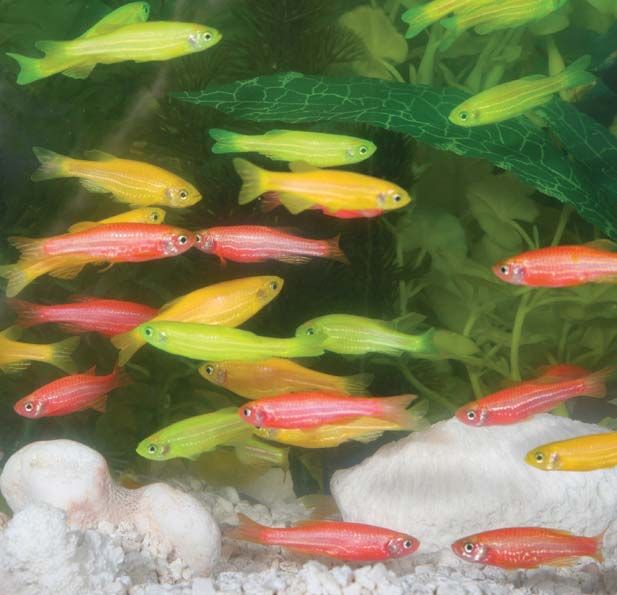
324 Capítulo 15
productos proteínicos de diversa utilidad, hasta el desarrollo de plantas y animales que expresan genes ajenos (vea la fotografía). El desarrollo de la clonación de ADN, de la modifi cación molecular, y de técnicas relacionadas ha transformado el punto de vista de las personas acerca de la biotecnología , que es el uso comercial o industrial de células u organismos. Actualmente, la biotecnología incluye numerosas aplicaciones en tan diversas áreas como medicina, alimentos y agricultura, y en ciencias forenses.
15.1 CLONACIÓN DEL ADN
OBJETIVOS DE APRENDIZAJE
1 Explicar cómo funciona una enzima de restricción típica para cortar las moléculas de ADN y dar ejemplos de las aplicaciones de estas enzimas en la tecnología del ADN recombinante. 2 Distinguir entre una biblioteca de ADN genómico, una biblioteca cromosómica, y una biblioteca de ADN complementario (ADNc); explicar por qué se podría clonar el mismo gen eucariota de ambas bibliotecas, de ADN genómico y de ADNc. 3 Explicar cómo se utiliza una sonda o fragmento de ADN.
4 Describir cómo se utiliza la reacción en cadena de la polimerasa para amplifi car el ADN in vitro.
La tecnología del ADN recombinante no se desarrolló rápidamente. Tiene sus raíces en la década en 1940 en estudios genéticos de bacterias y bacteriófagos (“devoradores de bacterias”) o virus que las infectan. (Vea la fi gura 12-2, que muestra algunos bacteriófagos en la bacteria Escherichia coli ). El biólogo molecular Paul Berg fue el primer investigador que elaboró una molécula de ADN recombinante; en 1980, compartió el Premio Nobel en Química por sus contribuciones a la tecnología del ADN recombinante. Después de décadas de investigación básica y la acumulación de extenso conocimiento, esta tecnología se ha hecho alcanzable y es disponible entre muchos científi cos que ahora emplean esos métodos. En la tecnología del ADN recombinante, los científi cos utilizan enzimas de restricción (endonucleasas) de las bacterias para cortar moléculas de ADN sólo en lugares específi cos. Las enzimas de restricción permiten dividir la molécula de ADN en segmentos manejables. Luego, cada fragmento se puede incorporar a una molécula vectorial apropiada, un portador capaz de llevar el fragmento de ADN al interior de la célula. Los bacteriófagos y las moléculas de ADN llamadas plásmidos son dos ejemplos de vectores. La molécula de ADN bacteriano es una doble cadena generalmente circular y cerrada; mientras que la mayoría de los plásmidos son moléculas sueltas de ADN, mucho más pequeñas, que pueden estar presentes y replicarse dentro de una célula bacteriana, como la E . coli . Los investigadores introducen plásmidos en células bacterianas mediante un método llamado transformación , mediante el cual las células permiten el ingreso de ADN ajeno (vea el capítulo 12). Para que la transformación sea efi ciente, los científi cos alteran la química de las células mediante la electroporación o electropermeabilización , que consiste en aplicar un shock eléctrico, para que la membrana plasmática sea permeable a los plásmidos. Cuando el plásmido entra a la célula, puede integrarse al genoma, replicarse y transmitirse a las células hijas durante la división celular. Cuando un plásmido recombinante , que tiene empalmado un ADN ajeno, se replica de esta manera, se elaboran muchas copias idénticas del ADN ajeno; en otras palabras, el ADN ajeno se clona . Los transposones son otros vectores efi cientes para transferir genes en ratones y en otros organismos modelo utilizados en la investigación. Recuerde, del capítulo 13, que un transposón es un elemento
genético móvil que puede cortarse a sí mismo de un lugar del genoma de una célula e insertarse en un lugar o posición diferente.
Las enzimas de restricción son “tijeras moleculares”
El descubrimiento de las enzimas de restricción constituyó un importante avance en el desarrollo de la tecnología del ADN recombinante. En la actualidad, un gran número de distintos tipos de enzimas de restricción, cada uno con sus propias características, están fácilmente disponibles a los investigadores. Por ejemplo, una enzima de restricción conocida como Hin dIII es capaz de buscar un segmento de ADN llamado sitio de restricción del tipo 5 ¿ –AAGCTT –3 ¿ , y cuando lo encuentra, lo corta. Un sitio de restricción es una secuencia de ADN que contiene el sitio que será eliminado o cortado por una enzima de restricción específi ca. La secuencia 5 ¿ -GAATT C– 3 ¿ es cortada por otra enzima de restricción, conocida como Eco RI. En general, los nombres de las enzimas de restricción son derivados de los nombres de las bacterias en que originalmente fueron aisladas. Así, Hin dIII y Eco RI son derivados de Hemophilus infl uenzae y E . coli , respectivamente. ¿Por qué las bacterias producen estas enzimas? Durante la infección, un bacteriófago inyecta su ADN en la célula bacteriana. La bacteria se puede defender a sí misma si tiene enzimas de restricción que ataquen al ADN del bacteriófago. La célula bacteriana cuida que su propio ADN no sufra algun daño, modifi cándolo después de la replicación. Para ello, una enzima agrega un grupo metilo a una o más bases en cada sitio de restricción de tal forma que la enzima de restricción no pueda actuar en el ADN bacteriano. Las enzimas de restricción son una herramienta que permite a los científi cos cortar, de manera controlada, el ADN cromosómico en fragmentos más cortos. Muchas de las enzimas de restricción empleadas para estudios de ADN recombinante cortan secuencias palindrómicas (se leen igual en ambas direcciones), lo que signifi ca que la secuencia de bases de una cadena, se lee lo mismo que su cadena complementaria en la dirección 5 ¿ ¡ 3 ¿ . Así, en el ejemplo de la Hin dIII, ambas cadenas leen 5 ¿ –AAGCTT –3 ¿ ; que, como una molécula de doble cadena se diagrama como sigue:
5 ¿¬ AAGCTT ¬ 3 ¿ 3 ¿¬ TT CGAA ¬ 5 ¿
Al cortar ambas cadenas del ADN, pero en forma escalonada, esas enzimas producen fragmentos con idénticos extremos complementarios de cadena simple:
5 ¿¬ A AGCTT ¬ 3 ¿ 3 ¿¬ TT CGA A ¬ 5 ¿
Esos extremos se llaman extremos pegajosos porque se emparejan mediante enlaces de hidrógeno con los extremos de cadenas complementarias, de otras moléculas de ADN que han sido cortadas con la misma enzima ( FIGU RA 15-1 ). Una vez que los extremos pegajosos de las dos moléculas se han unido de esta manera, entonces se tratan con ADN ligasa , una enzima que une covalentemente a los dos fragmentos de ADN para formar una molécula de ADN recombinante estable. (En el capítulo 12 se analizó el ADN ligasa en la sección sobre replicación de ADN).
El ADN recombinante se forma cuando el ADN está empalmado en un vector
En la tecnología del ADN recombinante, los genetistas cortan el ADN que va a ser clonado y el ADN del plásmido mediante la misma enzima de restricción. Entonces las dos muestras de ADN son mezcladas bajo condiciones que faciliten el enlace de hidrógeno entre las bases complementarias de los extremos pegajosos, y las muescas en el ADN recombinante resultante se sellan por el ADN ligasa ( FIGURA 15-2 ).
T
A
T
A T
A
T
A
G
C
C
G 3 ′
3 ′ 5 ′
5 ′
T
A
A T G C
5 ′
3 ′ 3 ′
5 ′ T T
A
A C G 3 ′
5 ′ 5 ′
3 ′
Más la enzima de restricción Hin dIII
Extremos pegajosos
FIGURA 15-1 Animada Corte de ADN con una enzima de restricción Muchas enzimas de restricción, como la Hin d III, cortan el ADN en secuencias que son palindrómicas, produciendo extremos pegajosos complementarios. Las pequeñas fl echas negras designan los sitios de escisión de la enzima.
MÉTODO DE INVESTIGACIÓN
Un plásmido es un portador de ADN ajeno a una célula bacteriana anfi triona, en donde se hacen muchas copias del gen de interés conforme se divide la célula. Esas copias son empleadas en diferentes tipos de investigación, por ejemplo, para elaborar el producto génico específi co, que está codifi cado por el ADN ajeno.
Transferencia de la molécula de ADN recombinante a la célula anfitriona, donde es copiada y transcrita para elaborar un producto génico.
El plásmido y el ADN de otro organismo son cortados por la misma enzima de restricción (en este ejemplo, HindIII ). Esto produce moléculas con extremos complementarios de una cadena simple.
1
Se mezclan dos tipos de moléculas en forma tal que se emparejen sus extremos pegajosos. Entonces el ADN ligasa forma enlaces covalentes en las uniones, juntando los fragmentos.
2
3
Fragmento de ADN clonable
ADN de interés de otro organismo
ADN recombinante
Plásmido de una bacteria
FIGURA 15-2 Empalme de ADN ajeno (gen de interés) en un vector de clonación (en este ejemplo, un plásmido bacteriano) para producir ADN recombinante
¿Por qué se utiliza?
¿Cómo se hace esto?


326 Capítulo 15
extra, una cualidad que hace a los BAC especialmente útiles en el Proyecto Genoma Humano , que se analiza posteriormente en este capítulo. El ADN recombinante también se puede introducir en las células de organismos eucariotas. Por ejemplo, los genetistas emplean virus modifi cados como vectores, en células mamarias. Estos virus son desactivados para que no maten a las células que infecten. En su lugar, las moléculas de ADN viral, así como el ADN ajeno que transportan, quedan incorporados en los cromosomas de la célula después de la infección. Posteriormente se analizarán otros métodos que no requieren un vector biológico.
El ADN puede ser clonado en el interior de las células
Debido a que un gen individual sólo es una pequeña parte del ADN total en un organismo, aislar el pedazo de ADN que contiene ese gen particular es igual a encontrar una aguja en un pajar: se necesita un poderoso detector. Actualmente, muchos métodos permiten a los biólogos aislar una secuencia específi ca de nucleótidos de un organismo. En seguida se presenta el análisis de métodos para clonar el ADN en el interior de las células bacterianas. Como ejemplo se utiliza la clonación del ADN humano, aunque el procedimiento es aplicable para cualquier organismo.
Una biblioteca de ADN genómico contiene fragmentos de todo el ADN en el genoma
El ADN total en una célula constituye su genoma . Por ejemplo, si el ADN se extrae de las células humanas, entonces se conoce como ADN genómico humano. Una biblioteca de ADN genómico es una colección de miles de fragmentos de ADN que representan a todo el ADN en el genoma. Cada uno de estos fragmentos se puede insertar en un plásmido, que a su vez normalmente se incorpora en una célula bacteriana. Así, una biblioteca de ADN genómico está almacenada en una colección de bacterias recombinantes, cada una con un diferente fragmento de ADN humano. Los científi cos emplean bibliotecas de ADN genómico para aislar y estudiar genes específi cos. Además, las bibliotecas de ADN genómico contienen un gran número de secuencias de bases que no codifi can proteínas. Los cromosomas individuales también se pueden aislar para elaborar una biblioteca cromosómica que contiene todos los fragmentos de ADN en ese cromosoma específi co. Si se conoce que un gen de interés está asociado con un cromosoma particular, entonces es más fácil aislar ese gen de una biblioteca cromosómica que de la biblioteca de ADN genómico. Los métodos de clonación básicos apenas descritos se utilizan para elaborar ADN genómico o bibliotecas cromosómicas. Primero, el ADN se corta con una enzima de restricción, generando una población de fragmentos de ADN ( FIGURA 15-4 ). Esos fragmentos varían en tamaño y en la información genética que transportan, pero todos ellos tienen extremos pegajosos idénticos. Los genetistas tratan al plásmido de ADN, que
Los plásmidos que ahora se utilizan en el trabajo del ADN recombinante han sido extensamente manipulados en el laboratorio para incluir características útiles para aislar y analizar el ADN clonado ( FIGURA 15-3 ). Entre éstos está un origen de replicación (vea el capítulo 12), uno o más sitios de restricción, y genes que dejen a los investigadores seleccionar células transformadas mediante plásmidos recombinantes. Estos genes permiten que las células transformadas crezcan bajo condiciones específi cas en las cuales las células sin esta modifi cación, no pueden hacerlo. Típicamente, los plásmidos no contienen genes esenciales de las células bacterianas en condiciones normales. Sin embargo, con frecuencia transportan genes que son útiles bajo condiciones ambientales específi cas, como genes que confi eren resistencia a antibióticos particulares o que permiten que las células utilicen un nutriente específi co. Por ejemplo, las células transformadas con un plásmido que incluye un gen para resistencia al antibiótico tetraciclina pueden crecer en un medio que contiene tetraciclina, mientras que ahí las células no transformadas no pueden hacerlo. Una propiedad limitante de cualquier vector es el tamaño del fragmento de ADN que puede transportar de manera efectiva. Es frecuente que el tamaño de un segmento de ADN se presente en kilobases (kb), con 1 kb igual a 1000 pares de bases. Normalmente, los fragmentos que son más pequeños que 10 kb son insertados en plásmidos para empleo en E . coli . Sin embargo, fragmentos mayores requieren el uso de vectores bacteriófagos, que pueden manejar hasta 23 kb de ADN. Otros vectores son vectores de clonación cósmidos , que son vectores de combinación con características de bacteriófagos y plásmidos, y cromosomas artifi ciales bacteriales (BAC) , que acomodan fragmentos mucho más grandes de ADN. Un solo BAC puede incluir hasta 200 kb de ADN
Aat I
Xba I
Hpa I
Cla I Pvu II
Sma I Sal I Bam HI
R
e
s
i
s
t
e
n
c
i
a a
U
R
A
3
R
e
s
i
s
t
e
n
c
i a
Origen de replicación de la E. coli
Plásmido
Bacteria
Este vector plásmido tiene varias características útiles. Los investigadores lo ensamblaron a partir de fragmentos de ADN que aislaron de plásmidos, genes de E. coli , y genes de levadura. Los dos orígenes de replicación, uno para la E. coli y otro para la levadura, Saccharomyces cerevisiae , replican independientemente en cualquier tipo de célula. Las letras sobre el círculo externo designan sitios para enzimas de restricción que cortan al plásmido sólo en esa posición. También se muestran los genes de resistencia para los antibióticos ampicilina y tetraciclina, y el gen URA-3 de levadura. El gen URA-3 es útil cuando se transforman células de levadura que carecen de una enzima requerida para la síntesis de uracilo. Las células que admiten el plásmido crecen en un medio deficiente de uracilo.
Tamaños relativos de un plásmido y el ADN principal de una bacteria.
Cromosoma bacteriano
a
l
a
a
m
p
i
c
i l
i
n
a
O
r
i
g
e
n
d
e
r
e
p
l i
c
a
c i
ó
n
d
e
l
a
l
e
v
a
d
u
r
a
l
a
t
e
t r
a
c
i
c
l i
n
a
FIGURA 15-3 Plásmidos
Tecnología ADN y genómica 327
incorporan un plásmido que contiene un gen de resistencia al antibiótico. Además, normalmente el plásmido se ha modifi cado en formas que capacitan a los investigadores para identifi car las células con plásmidos recombinantes. Las bibliotecas de ADN genómico y cromosómicas contienen redundancias; es decir, ciertas secuencias de ADN humano han sido insertadas en plásmidos más de una vez, al azar. Sin embargo, cada plásmido recombinante individual, como un libro en la biblioteca, sólo contiene un único fragmento del genoma humano total. Para identifi car un plásmido que contiene una secuencia de interés, el investigador clona cada plásmido hasta que hay millones de copias para trabajar con ellas. Este proceso ocurre conforme la célula bacteriana crece y se divide. Una muestra diluida del cultivo bacteriano se esparce en un medio de crecimiento sólido (placas de agar), así las células quedan bastante separadas. Cada célula se divide muchas veces, produciendo una colonia visible, que es un clon de células genéticamente idénticas a partir de una célula individual.
será empleado como un vector, con la misma enzima de restricción que convierte los plásmidos circulares en moléculas lineales con extremos pegajosos complementarios a aquellos de los fragmentos de ADN humano. Los plásmidos recombinantes se producen mezclando los dos tipos de ADN (humano y plásmido) bajo condiciones que promueven el enlace de hidrógeno de las bases complementarias. Entonces, el ADN ligasa se utiliza para unir covalentemente los extremos emparejados del plásmido y del ADN humano, formando ADN recombinante. Inevitablemente, también se producen plásmidos no recombinantes ( que no se muestran en la fi gura ) porque algunos plásmidos revierten a su confi guración circular original sin incorporar el ADN ajeno, en este caso el humano. Mediante transformación, los genetistas insertan plásmidos en células bacterianas sensibles al antibiótico. Ya que la proporción de plásmidos a las células se mantiene muy baja, es raro que una célula reciba más de una molécula plásmida, y no todas las células reciben un plásmido. Normalmente los investigadores incuban células sensibles al antibiótico en un medio nutriente que incluye antibióticos; sólo crecen células que
MÉTODO DE INVESTIGACIÓN
Una biblioteca genómica es una colección de todos los fragmentos de ADN en el genoma de un organismo; una biblioteca cromosómica es una colección de todos los fragmentos de ADN en un cromosoma específi co. Cada fragmento de ADN se “almacena” en un clon de células bacterianas recombinantes. Los científi cos emplean bibliotecas genómicas y cromosómicas para aislar y estudiar genes.
1 El ADN humano se corta con una enzima de restricción, generándose una población de fragmentos de ADN.
2 El ADN ligasa combina fragmentos de ADN y plásmidos bacterianos que ya contienen un gen de resistencia a un antibiótico.
3 Los plásmidos recombinantes son insertados en bacterias sensibles al antibiótico.
4 Las bacterias son incubadas en un medio nutriente que también contiene antibiótico. Sólo crecen aquellas células que tienen incorporado un plásmido recombinante.
ADN humano
Se produce ADN recombinante
Transformación
Fragmento 2 Fragmento 3 Fragmento 1 Fragmento 4
Sitios de escisión o corte
Gen de resistencia al antibiótico
Bacteria sin plásmido
Placa con un medio que contiene antibiótico
Las bacterias con plásmido viven y se multiplican para formar una colonia.
Las bacterias sin plásmido no crecen.
R R R R
FIGURA 15-4 Producción de una biblioteca de ADN genómico o una biblioteca cromosómica
¿Por qué se utiliza?
¿Cómo se hace esto?
328 Capítulo 15
cuencia específi ca de ADN implica el uso de una sonda de ADN , que es un segmento de ADN que es homólogo a parte de la secuencia de interés. Normalmente, la sonda de ADN es un segmento de ADN de una cadena, marcado radiactivamente, que puede hibridar , unir mediante el apareamiento de bases, con secuencias de bases complementarias en el ADN objetivo. Para encontrar un ADN específi co, los biólogos transfi eren la biblioteca genómica a una membrana de nitrocelulosa o de nylon ( FIGU-
RA 15-5 ). Luego, tratan esta membrana químicamente para romper las células bacterianas, liberando los fragmentos de cadena simple de ADN (La cadena simple de ADN se une a la membrana). Entonces incuban
Todas las células de una colonia particular contienen el mismo plásmido recombinante, así durante este proceso también se clona una específi ca secuencia de ADN humano. La tarea importante es determinar qué colonia, de las miles, contiene un fragmento clonado de interés. Secuencias específi cas de ADN se identifi can en diversas formas.
Una sonda complementaria de ADN detecta una específi ca secuencia de ADN
Suponga que un investigador desea examinar miles de moléculas de ADN recombinantes en células bacterianas para encontrar la secuencia específi ca de ADN de interés. Un método común para detectar una se-
MÉTODO DE INVESTIGACIÓN
Una sonda de ácido nucleico radiactivo revela la presencia de secuencias de ADN complementarias en una biblioteca genómica.
Todos los clones de la biblioteca genómica se almacenan en placas multipozos. La biblioteca genómica completa de un organismo se guarda en muchas de esas placas, que se apilan con una tapa en la parte superior.
1
Las células de cada clon se transfieren a una ubicación específica en una membrana de nylon o de nitrocelulosa. Luego, la membrana se trata químicamente para romper las células bacterianas, y así se liberan los plásmidos que contienen fragmentos de ADN.
2
La sonda marcada se agrega a la membrana y se hibridiza con cualquier secuencia de nucleótidos complementaria (en este caso, con el gen de interés).
3
La hibridación se observa como un punto oscuro al poner la membrana contra la película de rayos X, que entonces se revela.
4
Sonda de una cadena simple de ADN marcada radiactivamente para el gen de interés
Membrana
Membrana
Bolsa
Ubicación del plásmido con el gen de interés
1 2 A B C
FIGURA 15-5 Identifi cación de una secuencia específi ca de ADN en una biblioteca genómica mediante hibridación con una sonda de ácido nucleico
¿Por qué se utiliza?
¿Cómo se hace esto?
Tecnología ADN y genómica 329
realizar la clonación en una célula . En pocas horas el ADN es amplifi cado millones de veces. En 1993, Mullis recibió el Premio Nobel de Química por este trabajo. En la RCP, el ADN polimerasa utiliza nucleótidos e iniciadores o cebadores para replicar una secuencia de ADN in vitro (fuera de un
la membrana con la sonda radiactiva para permitir que las sondas se hibriden con cualquier cadena complementaria de ADN que pueda estar presente. Cada lugar en la membrana que contenga ADN complementario al de la sonda particular se convierte en radiactiva y se detecta mediante autorradiografía (vea el capítulo 2), empleando película de rayos X. Por lo tanto, cada lugar sobre la película identifi ca una colonia con un plásmido que incluye el ADN de interés. Entonces, los biólogos retornan a la biblioteca genómica y eliminan las células que contienen la secuencia clonada de interés. Así, esas células crecen en cultivos para producir millones de nuevas bacterias, todas con el ADN recombinante de interés.
Una biblioteca de ADNc es complementaria al ARNm y no contiene intrones
Con frecuencia, los investigadores desean clonar genes intactos pero evitando a los intrones , que son regiones de genes eucariotas que no codifi can proteínas. Los científi cos también pueden desear clonar sólo aquellos genes que se expresan en un tipo celular particular. En tales casos, construyen bibliotecas de copias de ADN a partir del ARNm maduro en donde se han eliminado los intrones. Las copias, que se conocen como ADN complementario (ADNc) porque son complementarias al ARNm, también carecen de intrones. Los investigadores utilizan la enzima transcriptasa inversa (vea el capítulo 13) para sintetizar ADNc de cadena simple. Luego, se utiliza ADN polimerasa para formar la doble cadena de ADNc ( FIGURA 15-6 ). Una biblioteca de ADNc se forma empleando ARNm de un solo tipo celular como material de inicio. Las moléculas de ADNc de doble cadena se insertan en vectores plásmido o virus, que después se multiplican dentro de células bacterianas. El análisis de clones de ADNc permite a los investigadores determinar ciertas características de la proteína codifi cada por el gen, incluyendo su secuencia de aminoácidos. También pueden estudiar la estructura del ARNm maduro. Así mismo, como el ADNc es copia del ARNm, no tiene secuencias de intrones, por tanto cuando se comparan las secuencias de bases del ADNc con las del ADN genómico o con las de una biblioteca de ADN cromosómico se revelan las posiciones de las secuencias codifi cantes de los intrones y los exones en el gen. Las secuencias de ADNc clonadas también son útiles cuando los genetistas quieren producir una proteína eucariota mediante bacterias. En caso de introducir un gen humano que contiene intrones, como el gen para la hormona del crecimiento humano, en una bacteria, ésta es incapaz de eliminar los intrones del ARN transcrito para elaborar un ARNm funcional a fi n de fabricar su producto proteínico. Sin embargo, si inserta un clon de ADNc del gen en la bacteria, su transcrito contiene una región codifi cante no interrumpida. En tal caso, una proteína funcional se sintetiza, cuando los genetistas insertan el gen corriente abajo, de un promotor bacteriano apropiado y si además incluyen las secuencias de iniciación de traducción bacteriano correspondientes.
La reacción en cadena de la polimerasa amplifi ca el ADN in vitro
Los métodos que se acaban de describir para amplifi car, o elaborar múltiples copias de una específi ca secuencia de ADN implica la clonación de ADN en células, normalmente éstas son las bacterias. Estos procesos consumen tiempo y requieren una adecuada muestra de ADN como material de inicio. La reacción en cadena de la polimerasa (RCP) , desarrollada en 1985 por el bioquímico Kary Mullis, permite a los investigadores amplifi car una minúscula muestra de ADN sin necesidad de
1 La formación del ADNc se basa en el procesamiento de ARN que ocurre en el núcleo para producir ARNm maduro.
2 El ARNm maduro se extrae y se purifica. La transcriptasa inversa se agrega al tubo para producir un ADNc de cadena simple, el cual es complementario al ARNm.
3 Entonces enzimas específicas degradan el ARNm.
4 El ADN polimerasa se utiliza para sintetizar una segunda cadena de ADN
5 El resultado final es una molécula de ADNc de doble cadena.
Transcripción
Exón Exón Exón Intrón Intrón
Procesamiento de ARN (eliminación de intrones) Pre-ARNm
ARNm maduro
ARNm ARNm maduro
ADNc
ADN en un cromosoma eucariota
ADNc, es una copia de ARNm
Transcriptasa inversa
ARN degradado
ADNc de cadena doble
ADN polimerasa
FIGURA 15-6 Animada La formación de ADNc
330 Capítulo 15
entonces los investigadores utilizan ADN polimerasa resistente al calor, conocida como polimerasa Taq . El nombre de esta enzima refl eja su fuente, Th ermus aquaticus , una bacteria que vive en las aguas termales del Parque Nacional Yellowstone. Debido a que en este ambiente el agua está cerca del punto de ebullición, todas las enzimas en T . aquaticus han evolucionado para ser estables a elevadas temperaturas. (Del capítulo 3, recuerde que al calentarse la mayoría de las proteínas se desnaturalizan irreversiblemente, cambian su confi guración global y pierden su actividad biológica). Las bacterias que viven en conductos termales de mares profundos han evolucionado de manera similar a las enzimas resistentes al calor.
organismo vivo), produciendo dos moléculas de ADN ( FIGURA 15-7 ). Entonces los investigadores desnaturalizan, o separan por calor, las dos cadenas de cada molécula y las replican otra vez, fabricando cuatro moléculas de cadena doble. Después del próximo ciclo de calentamiento y replicación, existen ocho moléculas, y así sucesivamente, con el número de moléculas de ADN doblándose en cada ciclo. Después de sólo 20 ciclos de calentar y enfriar, realizados con equipo automático, este proceso exponencial produce ¡2 20 , o más de 1 millón, de copias de la secuencia objetivo! Como la reacción se puede realizar efi cientemente sólo si la ADN polimerasa permanece estable durante muchos ciclos de calentamiento,
MÉTODO DE INVESTIGACIÓN
La RCP toma una muestra extremadamente pequeña de ADN y la amplifi ca a millones de copias en pocas horas.
5 ′ 3 ′
ADN original de doble cadena
Cebador
Cebadores Cebadores
Cebador
etc.
Ciclo I Ciclo II
3 ′
3 ′
5 ′
5 ′
3 ′
3 ′
5 ′
5 ′
3 ′
5 ′
3
2
1 El ADN se desnaturaliza (se separa en dos cadenas simples) mediante aplicación de calor.
Los cebadores o iniciadores se adhieren al sitio de unión del cebador en cada cadena de ADN
Cada cadena de ADN actúa como molde para la amplificación de ADN; esta reacción es catalizada por ADN polimerasa Taq . El número de moléculas de ADN se duplica cada vez que se repite el ciclo.
La mezcla para la reacción inicial incluye una muy pequeña cantidad de ADN de doble cadena, precursores de ADN (desoxirribonucleótidos), cebadores específi cos de ácido nucleico, y la enzima ADN polimerasa Taq, resistente al calor. La RCP incluye ciclos repetidos de desnaturalización, adhesión al cebador y la elongación de la cadena con pares de bases complementarias que se van agregando por acción enzimática.
FIGURA 15-7 Animada Amplifi cación de ADN mediante la reacción en cadena de la polimerasa (RCP)
¿Por qué se utiliza?
¿Cómo se hace esto?
Tecnología ADN y genómica 331
fragmentos desconocidos. El gel se tiñe después de la separación de los fragmentos de ADN para así mostrar su número y localización.
La transferencia de ADN, ARN y proteínas permite identifi car fragmentos específi cos
Los genetistas pueden identifi car fragmentos específi cos de ADN que se hibridan con una sonda de ADN complementario. Sin embargo, es imposible hibridar una sonda con fragmentos de ADN contenidos en un gel. Por esta razón, normalmente el ADN se desnaturaliza y luego se transfi ere a una membrana de nitrocelulosa o nylon, que recoge el ADN de manera semejante a como el papel secante absorbe la tinta. El registro resultante, que esencialmente es una réplica del gel, se incuba con una sonda de ADN, que se hibrida con cualquier fragmento de ADN complementario. Si la sonda es radiactiva, el registro se somete a una autorradiografía. Los puntos resultantes en la película de rayos X corresponden a las posiciones de los fragmentos en el gel que son complementarios a la sonda. Actualmente, se detectan muchas sondas mediante luminiscencia química, que se analiza por escáneres computarizados, sin necesidad de la autorradiografía. Este método para identifi car fragmentos de ADN, separándolos mediante electroforesis en gel y después transfi riéndolos a una membrana de nylon o nitrocelulosa, se llama una transferencia de Southern , en honor a su inventor, Edward M. Southern de la Universidad de Edinburgo, Escocia ( FIGURA 15-9 ) . El procedimiento que tiene amplias aplicaciones, se emplea para diagnosticar ciertos tipos de desórdenes genéticos. Por ejemplo, en algunos casos el ADN de un alelo mutante se detecta porque éste emigra de modo muy diferente en el gel, de como lo hace su contraparte normal. Se emplean técnicas de transferencia similares para estudiar ARN y proteínas. Cuando las moléculas de ARN separadas mediante electroforesis se transfi eren a una membrana y se detectan utilizando una sonda de ácido nucleico, al resultado se llama transferencia Northern (Northern es un juego de palabras con el apellido del investigador Southern asociado con esta técnica). En el mismo espíritu, la expresión transferencia Western se aplica a un registro que contiene proteínas o polipéptidos previamente separados por electroforesis en gel. (Hasta la fecha, nadie ha inventado un tipo de registro que pudiera llamarse transferencia Eastern). En el caso de la transferencia Western, los científi cos reconocen los polipéptidos de interés mediante moléculas de anticuerpos marcadas que los unen específi camente. Por ejemplo, la transferencia Western se emplea como diagnóstico para detectar la presencia de proteínas específi cas del HIV-1, el virus del SIDA.
Los polimorfi smos de longitud de los fragmentos de restricción son una medida de las relaciones genéticas
La variabilidad de genes dentro de una población se puede estudiar en diversas formas. Un método tradicional se basa en la premisa de que ningún par de individuos tiene exactamente el mismo número o posición de enzimas de restricción cortando sitios en el genoma: mutaciones aleatorias de ADN y recombinación en los individuos pueden generar fragmentos de diferentes longitudes por efecto de una enzima de restricción determinada. Estos polimorfi smos de longitud de fragmentos de restricción , conocidos comúnmente como PLFR, o “rifl ips”, se pueden utilizar para determinar qué tan cercanamente relacionados están diferentes miembros de una población. (El término polimorfi smo signifi ca “muchas formas” y se refi ere a diferencias hereditarias encontradas dentro de una
Prácticamente, la técnica RCP tiene aplicaciones sin límites. Hace más fácil la clonación. A los investigadores les permite amplifi car y analizar muestras minúsculas de ADN de una diversidad de fuentes, que van desde escenas de crímenes hasta restos arqueológicos. Por ejemplo, los científi cos han empleado la RCP para analizar el ADN mitocondrial obtenido de los huesos del Neandertal (vea el capítulo 22). Una parte del genoma del Neandertal fue secuenciado en 2006, y los investigadores pudieron compararlo con las partes equivalentes del genoma humano. Una limitación de la técnica RCP es su altísima sensibilidad. Aún una minúscula cantidad de contaminante en el ADN de muestra se puede amplifi car si ésta incluye una secuencia de ADN complementaria a los cebadores, conduciendo potencialmente a una conclusión errónea. Los científi cos toman precauciones adecuadas para eliminar esto y otros problemas técnicos.
Repaso
■ ¿Qué son las enzimas de restricción? ¿Cómo se emplean en la investigación de ADN recombinante?
■ ¿Cuáles son los méritos relativos de las bibliotecas de ADN genómico, de las bibliotecas cromosómicas, y de las bibliotecas de ADNc?
■ ¿Cómo se utilizan las sondas de ADN?
■ ¿Por qué es valiosa la técnica RCP?
15.2 ANÁLISIS DEL ADN
OBJETIVOS DE APRENDIZAJE
5 Distinguir entre las técnicas de transferencia de ADN, ARN y las de transferencia de proteínas. 6 Describir el método de terminación de la cadena para secuenciación de ADN.
La clonación de ADN en células y la técnica RCP han tenido importantes repercusiones en el análisis genético porque proporcionan sufi ciente material genético para abordar ciertas cuestiones fundamentales respecto a genes específi cos y su ARN o de productos proteínicos. Por ejemplo, ¿cuándo y cómo se expresa un gen? ¿Un gen determinado es idéntico de un individuo a otro? ¿Es diferente de una especie a otra? ¿Dónde se localiza el gen dentro del genoma? En esta sección y en la siguiente, se consideran varias técnicas que ayudan a investigar estas preguntas. En la sección fi nal del capítulo se examinan algunas de las aplicaciones prácticas de la tecnología del ADN.
La electroforesis en gel se emplea para separar macromoléculas
Las mezclas de ciertas macromoléculas, como proteínas, polipéptidos, fragmentos de ADN, o ARN, se separan mediante electroforesis en gel , un método que aprovecha que esas moléculas portan grupos cargados eléctricamente que los obliga a migrar en un campo eléctrico. La
FIGURA 15-8 ilustra la electroforesis en gel de moléculas de ADN. Los ácidos nucleicos migran a través del gel hacia el polo positivo del campo eléctrico porque están cargados negativamente debido a sus grupos fosfatos. Como el gel retiene más a las moléculas grandes que a las pequeñas, entonces el ADN se separa según el tamaño de sus componentes. El incluir fragmentos de ADN de tamaño conocido, como estándares, asegura la realización de mediciones exactas de los pesos moleculares de los
332 Capítulo 15
El análisis de PLFR se ha empleado para realizar pruebas de paternidad y cuando se analiza la evidencia encontrada en la escena de un crimen. El análisis de PLFR también se ha utilizado en el mapeo de la localización exacta de las mutaciones de genes, como la mutación que causa la fi brosis quística. No obstante que la técnica PLFR ha proporcionado información útil en muchas áreas de la biología, se ha reemplazado rápidamente por métodos más novedosos, como la secuenciación de ADN automatizada (que se analiza en la siguiente sección).
población). Un polimorfi smo genético existe si individuos de dos o más tipos discretos, o “morfi smos”, se encuentran en una población. Las enzimas de restricción se utilizan para cortar el ADN de dos o más individuos, y los fragmentos se separan mediante electroforesis en gel, con el ADN de cada individuo en un carril separado; los fragmentos más cortos migran más lejos que los fragmentos más largos. Para visualizar los fragmentos, los investigadores hacen una transferencia Southern del ADN en el gel, que en seguida se desnaturaliza y permite hibridar con una sonda de ADN. Entonces se puede comparar el patrón de bandas resultante.
MÉTODO DE INVESTIGACIÓN
La electroforesis en gel separa moléculas, como ácidos nucleicos, con base en su tamaño y carga conforme migran a través de un campo eléctrico.
1 El investigador coloca un campo eléctrico en un material de gel, que consiste en agarosa o poliacrilamida, que se vierte como una delgada losa en un vidrio o un soporte plexiglás. Después de que el gel se ha solidificado, el científico introduce mezclas de macromoléculas (en este caso, fragmentos de ADN de diferentes tamaños) en pozos formados en un extremo del gel.
3 Este gel contiene fragmentos de ADN separados. El gel se tiñe con bromuro de etidio, un colorante que se une al ADN y es fluorescente bajo luz ultravioleta.
Mezclas colocadas en el pozo
Gel
Solución amortiguadora
Estándares de tamaños conocidos colocados en el pozo
Ánodo
Cátodo
Dirección del movimiento
2 Cuando se aplica una corriente eléctrica, las moléculas de ADN cargadas negativamente se mueven del polo negativo al polo positivo. Los más pequeños fragmentos de ADN viajan la distancia más larga. En esta etapa las bandas de ADN son invisibles.
Moléculas más grandes
Moléculas más pequeñas
–
–
Eurelios/Photo Researchers, Inc.
FIGURA 15-8 Electroforesis en gel
¿Por qué se utiliza?
¿Cómo se hace esto?
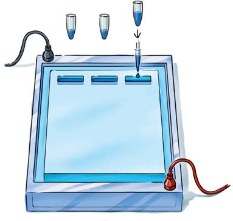
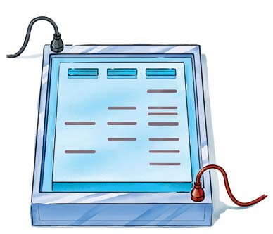
Tecnología ADN y genómica 333
permitió a los científi cos secuenciar grandes cantidades de ADN con rapidez y confi abilidad. La secuenciación de ADN automatizada se apoya en el método de terminación de la cadena inventado por el bioquímico británico Fred Sanger en 1974. En 1980, Sanger compartió el Premio Nobel de Química por esta contribución. Éste fue el segundo Premio Nobel para Sanger; el primero fue por su trabajo acerca de la estructura de la proteína insulina. No obstante que ahora la secuenciación de ADN está completamente automatizada, muchas de las técnicas automatizadas continúan basándose en el método de terminación de la cadena introducido por Sanger ( FIGURA 15-10 ). El método de terminación de la cadena para la secuenciación de ADN se basa en el hecho de que una cadena de ADN en replicación que ha incorporado un nucleótido sintético modifi cado, conocido como
Métodos que se han creado para secuenciar rápidamente el ADN
Una manera de caracterizar el ADN es determinar su secuencia de nucleótidos. Los investigadores utilizan un pedazo clonado de ADN como una herramienta de investigación para muchas aplicaciones diferentes. Por ejemplo, pueden clonar un gen con el fi n de obtener la proteína codifi cada para algún proceso industrial o médico. Sin considerar la aplicación particular, los investigadores deben conocer mucho sobre el gen y su funcionamiento. Normalmente, empiezan por determinar la secuencia de nucleótidos. En la década de 1990, el advenimiento de máquinas para secuenciación de ADN automatizada conectadas a poderosas computadoras
MÉTODO DE INVESTIGACIÓN
La técnica de transferencia e hibridación de Southern permite que el ADN separado mediante electroforesis se transfi era a un fi ltro como si fuera un gel. Luego, éste puede ser hibridizado con sondas complementarias radiactivas.
- –
1 Digerir el ADN con enzimas de restricción. 2 Colocar fragmentos de ADN sobre el gel y separarlo por electroforesis.
3 Visualizar los fragmentos de ADN empleando luz ultravioleta.
4 Durante la transferencia, la solución amortiguadora se mueve hacia arriba, transfiriendo fragmentos de ADN a un filtro de unión de ADN.
6 Colocar juntos el filtro y la sonda marcada radiactivamente en una bolsa sellada para poder hibridar
7 Lavar el filtro para eliminar el exceso de sonda y después exponer el filtro a la película de rayos X; el resultado es una autorradiografía que muestra los fragmentos de ADN hibridados.
5 Los fragmentos de ADN sobre el filtro están en la misma ubicación que los del gel.
Peso
Papel absorbente
ADN Fragmentos de ADN
Solución amortiguadora Gel de agarosa
Fragmentos de ADN muy largos
Fragmentos de ADN muy cortos
Filtro de nitrocelulosa Gel
Fieltro Amortiguador
Solución de la sonda radiactiva
FIGURA 15-9 Técnica de transferencia e hibridación de Southern
¿Por qué se utiliza?
¿Cómo se hace esto?

334 Capítulo 15
una pequeña cantidad de sólo uno de los cuatro didesoxinucleótidos: ddATP, ddCTP, ddGTP, o ddTT P. El prefi jo “dd” se refi ere a didesoxinucleótidos, para distinguirlos de los desoxinucleótidos, los cuales son designados por “d”. Ahora se indica cómo procede la reacción en la mezcla que incluye ddATP. En cada sitio en donde la adenina está especifi cada, ocasionalmente una cadena creciente incorpora un ddATP, deteniendo la elongación para que en la mezcla de reacción se formen fragmentos de ADN de variadas longitudes. Cada fragmento que contiene un ddATP marca una ubicación específi ca en donde la adenina normalmente se encontraría en la cadena recién sintetizada. De manera similar, en la mezcla
didesoxinucleótido , no puede estirarse más allá de ese punto. A diferencia de un desoxinucleótido “normal”, que tiene un grupo hidroxilo en su carbono 3 ¿ , a un didesoxinucleótido le falta un grupo hidroxilo en su carbono 3 ¿ . (Del capítulo 12, recuerde que un grupo hidroxilo 3 ¿ reacciona cada vez que se forma un enlace de fosfodiéster). Así, los didesoxinucleótidos terminan la elongación durante la replicación de ADN. El investigador prepara cuatro diferentes mezclas de reacción. Cada una contiene múltiples copias idénticas de una cadena del ADN que será secuenciado; ADN polimerasa; cebadores apropiados marcados radiactivamente ; y todos los cuatro desoxinucleótidos necesarios para sintetizar ADN: dATP, dCTP, dGTP y dTT P. Cada mezcla también incluye
MÉTODO DE INVESTIGACIÓN
El método enzimático de terminación de la cadena de Sanger o método didesoxi es una forma rápida y efi ciente de secuenciar el ADN.
Cortesía de B. Slatko, New England Biolabs
Fragmentos más cortos
Fragmentos más largos
A T G C T A T G C T C C ddA C G A T A C G A G G
ddA T A C G A G G
ddA C G A G G
ddA G G
5 ′
T A C G A T A C G A G G
Fragmento de una cadena simple de ADN para ser secuenciado
A T G C T A T G C T C C
5 ′ 3 ′
3 ′
3 ′
5 ′
5 ′
3 ′ A C G T
+ddATP +ddCTP +ddGTP +ddTTP
A C G T
+ddATP
Productos de reacción de la mezcla que contiene didesoxiATP
Dirección de síntesis
Cebador radiactivo
Se emplean cuatro mezclas de reacción diferentes para secuenciar un fragmento de ADN; cada una contiene una pequeña cantidad de un didesoxinucleótido, como el ddATP. También se agregan mayores cantidades de los cuatro didesoxinucleótidos normales (dATP, dCTP, dGTP y dTTP) más ADN polimerasa y cebadores marcados radiactivamente.
1
La incorporación aleatoria de didesoxiATP (ddATP) en la cadena creciente genera una serie de fragmentos de ADN más pequeños que terminan en todas las posibles posiciones donde se encuentra la adenina en los fragmentos recién sintetizados. Éstos corresponden a las posiciones en las que se presenta la timina en la cadena molde original.
2 Los productos radiactivos de cada mezcla de reacción se separan por la electroforesis en gel y se localizan al exponer al gel a la película de rayos X. La secuencia de nucleótidos del ADN recién sintetizada se lee directamente de la película (5’ → 3’). La secuencia en la cadena de molde original es su complemento (3’ → 5’).
3 Exposición del gel con la secuenciación de ADN a una película de rayos X. Los cuatro carriles representan las mezclas de reacción de didesoxi A, C, G y T, respectivamente.
4
FIGURA 15-10 Método de terminación de la cadena de didesoxi para la secuenciación de ADN
¿Por qué se utiliza?
¿Cómo se hace esto?
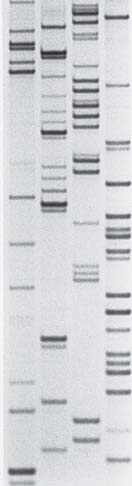
Tecnología ADN y genómica 335
La información de la secuencia de ADN se guarda en grandes bases de datos de computadoras, muchas de las cuales son accesibles en Internet. Ejemplos son las bases de datos del Centro Nacional de Información Biotecnológica y de la Organización del Genoma Humano (HUGO). Los genetistas utilizan esas bases de datos para comparar secuencias recién descubiertas con aquellas ya conocidas para identifi car genes y acceder a muchos otros tipos de información. Al investigar secuencias de ADN o de aminoácidos en una base de datos, los investigadores pueden ganar mucha visión en la función y estructura del producto génico, las relaciones evolutivas entre genes, y la variabilidad entre secuencias de genes dentro de una población. La secuenciación de ADN en las especies ha proporcionado una gran cantidad de información nueva que sustentan la evolución (vea el capítulo 18).
Repaso
■ ¿Qué es la transferencia e hibridación de Southern?
■ ¿Qué técnica hace funcional la secuenciación de ADN automatizada? Describa las etapas básicas de este método.
15.3 GENÓMICA
OBJETIVOS DE APRENDIZAJE
7 Describir tres importantes áreas de investigación en genómica. 8 Explicar cómo funciona un microarreglo de ADN y dar un ejemplo de su investigación y potencial médico. 9 Defi nir farmacogenética y proteómica .
Ahora que se han secuenciado los genomas humanos y de varios cientos de otras especies, ¿qué puede hacerse con esa información? La genómica es el campo emergente de biología que estudia la secuencia de ADN completa del genoma de un organismo para identifi car todos sus genes, determinar su ARN o productos proteínicos, e indagar cómo los genes son regulados. Como se verá, la genómica tiene importantes aplicaciones prácticas además de ayudar a contestar preguntas científi cas. La ciencia de la genómica tiene varias áreas de investigación, incluyendo genómica estructural, genómica funcional, genómica comparativa, y metagenómica. La genómica estructural se ocupa del mapeo y secuenciación de genomas. La genómica funcional estudia las funciones de los genes y secuencias no génicas en genomas. La genómica comparativa implica la comparación de genomas de diferentes especies para determinar qué cambios de ADN han ocurrido durante el curso evolutivo. Este conocimiento aumenta nuestra comprensión de relaciones evolutivas porque los genes con poca o ninguna variación entre especies son funcionalmente importantes en las especies en donde son encontrados. La metagenómica utiliza técnicas genómicas para analizar comunidades de organismos en lugar de organismos individuales. La metagenómica permite que los investigadores identifi quen y estudien todos los genes en una comunidad, al mismo tiempo.
de reacción que incluye ddCTP, cada fragmento que contiene ddCTP marca la posición de una citosina en la cadena recién sintetizada, y así sucesivamente. Los fragmentos radiactivos de cada reacción se desnaturalizan y después se separan en un gel por electroforesis, con cada mezcla de reacción, correspondientes a A, T, G, o C, ocupando su propio carril en el gel. Así, las posiciones de los fragmentos recién sintetizados en el gel se pueden determinar mediante autorradiografía. La alta resolución del gel hace posible distinguir entre fragmentos que difi eran en longitud por sólo un nucleótido, entonces el investigador puede leer la secuencia en el ADN recién sintetizado, una base a la vez. El método de terminación de la cadena continúa empleándose en muchas máquinas de secuenciación de ADN automáticas. Sin embargo, el método de detección ha cambiado en que la secuencia de nucléotidos ya no se visualiza mediante radiactividad. En su lugar, los investigadores marcan al cebador o a cada uno de los cuatro ddNTP con colorantes fl uorescentes diferentes. La computadora utiliza un láser para leer la fl uorescencia de los marcadores de colorante conforme las bases emergen del extremo de un carril del medio de electroforesis ( FIGURA 15-11 ).
Los genomas completos se han secuenciado empleando secuenciación automatizada de ADN
Actualmente, las máquinas secuenciadoras son muy poderosas y pueden decodifi car cerca de 1.5 millones de bases en un período de 24 horas. Esos avances en la tecnología de secuenciación han hecho posible que los investigadores estudien secuencias de nucleótidos de genomas completos en una amplia variedad de bacterias, arqueas, y organismos eucariotas. Gran parte de esta investigación recibió su ímpetu inicial gracias al Proyecto Genoma Humano , que empezó en 1990. La secuenciación de los 3 mil millones de pares de bases del genoma humano fue esencialmente terminada en 2001. Ahora los genomas de unos 800 organismos han sido secuenciados, y varios cientos más están en etapas de planeación o fi nalización. Hay una extraordinaria explosión de datos de secuencias de genes, principalmente debido a los métodos de secuenciación automatizados.
FIGURA 15-11 Animada Un pequeño segmento del impreso de los resultados de secuenciación de ADN automatizada La computadora produce la serie de picos que se muestran conforme lee las bandas fl uorescentes en la electroforesis en gel. El nucleótido base adenina se muestra en verde, la guanina en negro, la citosina en azul, y la timina en rojo. La secuencia de ADN asignada por la computadora aparece en la parte superior del impreso.
© Mark Harmel/Alamy
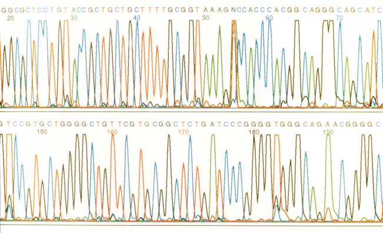
336 Capítulo 15
rrollar una nueva cepa de ratones KO (a los que se les ha desactivado un gen). Para esto, un gen no funcional, o desactivado, es clonado e introducido en células madre de origen embrionario (células ME) de ratón (también vea los capítulos 1 y 17). Una vez dentro de las células ME, los genes son relativamente fáciles de manejar porque, al igual que las células cancerosas, las células ME crecen indefi nidamente en los cultivos. Más importante, si son colocadas en un embrión de ratón, las células ME se dividen y producen todos los tipos de células normalmente encontrados en el ratón. En una minúscula fracción de esas células ME, el gen desactivado que se introdujo se asocia físicamente con el correspondiente gen en un cromosoma. Si esto ocurre, el gen en el cromosoma y el gen desactivado tienden a intercambiar segmentos de ADN en un proceso llamado recombinación homóloga . De esta manera, el alelo desactivado reemplaza al alelo normal en el cromosoma del ratón. Los investigadores inyectan, en los embriones tempranos de ratón, las células ME que suponen que es probable que lleven un gen desactivado y dejan que el ratón se desarrolle hasta la madurez. Generalmente, los científi cos estudian animales que portan el gen desactivado en cada célula. Sin embargo, como muchos genes son esenciales para la vida, los investigadores han modifi cado la técnica de desactivado para desarrollar cepas en las cuales un gen específi co es selectivamente desactivado en sólo un tipo de celula. Las investigaciones de laboratorio alrededor del mundo han desarrollado miles de diferentes cepas de ratón KO, cada una mostrando su propio fenotipo característico, y el número continúa creciendo. La desactivación de genes diana en ratones está aportando respuestas a cuestiones biológicas básicas relacionadas con el desarrollo de embriones, con el desarrollo del sistema nervioso, y el funcionamiento normal del sistema inmunológico. Esta técnica tiene gran potencial para revelar más sobre varias enfermedades humanas, especialmente porque muchas de ellas tienen un componente genético. Los genetistas están empleando la desactivación de genes para estudiar el cáncer, enfermedades cardiacas, anemia falciforme, enfermedades respiratorias como la fi brosis quística, y otros desórdenes.
Un cribado mutagénico revela los genes implicados en un fenotipo particular
Actualmente se realizan muchos proyectos a gran escala para detectar el efecto de las mutaciones en ratones y otros organismos. Previamente, los investigadores tratan a los ratones machos con mutágenos químicos que causan mutaciones en el ADN. Entonces cruzan a los machos con hembras normales y exploran a sus descendientes en búsqueda de fenotipos inusuales. A diferencia de la desactivación de genes, la mutagénesis no necesariamente incapacita por completo a un gen; en su lugar, es usual que cause pequeñas mutaciones aleatorias que cambian las propiedades de las proteínas que el ADN codifi ca. Es enorme la escala de la mutagénesis controlada ; un proyecto de detección en Alemania ha examinado 28,000 diferentes mutantes de ratones buscando cambios relevantes en los fenotipos.
Los microarreglos de ADN son una poderosa herramienta para estudiar la expresión génica
Los microarreglos de ADN proporcionan una manera de estudiar patrones de expresión génica en una variedad de organismos. Cada celda del microarreglo consiste en una sonda de una cadena simple de ADN colocada en un portaobjetos o en un chip ( FIGURA 15-12 ). Primero, un robot mecánico prepara el microarreglo. Éste detecta cada posición de la rejilla con miles a millones de copias de una cadena de ADN complementario (ADNc) específi ca. Cada posición, conocida como micropunto , contiene muchas copias de una cadena simple de ADNc, las cuales fueron sintetiza-
La identifi cación de genes codifi cantes de proteínas es útil en la investigación y en aplicaciones médicas
La mayor parte del genoma humano tiene secuencias de ADN que no codifi can proteínas. No obstante que el genoma completo es de interés para los biólogos, las regiones codifi cantes de proteínas son de particular importancia para los investigadores médicos. Los científi cos han recabado decenas de miles de cortas secuencias de ADNc (25 a 30 nucleótidos), conocidas como marcadores de secuencias expresadas (MSE) , que pueden ayudar a identifi car genes codifi cantes de proteínas. Los científi cos cuentan, vía Internet, con un gran conjunto de datos que contiene miles de MSE humanas. Empleando soft ware cazador de genes, los biólogos que trabajan acerca de una particular secuencia de ADN pueden acceder al conjunto de datos y comparar su secuencia de ADN con una secuencia MSE conocida. Muchas MSE en el conjunto de datos se han identifi cado al compararlas con secuencias de ADN conocidas de otras especies. Por ejemplo, el gen telomerasa humano TRT se identifi có comparando su secuencia MSE humana con la de una secuencia de telomerasa de levadura. (Recuerde del capítulo 12, que la telomerasa agrega secuencias de nucleótidos repetitivas a los extremos, o telómeros, de cromosomas eucariotas).
Una manera de estudiar la función génica es silenciar los genes uno a la vez
El ARN de interferencia (ARNi), descubierto por primera vez a mediados de 1990, se puede emplear para determinar rápidamente la función de un gen específi co. Del capítulo 13, puede recordar que el ARNi es causado por pequeñas moléculas de ARN que interfi eren con la expresión de genes o, más precisamente, sus transcritos de ARNm maduros. La interferencia de ARN implica pequeños ARN interferentes, a microARN, y a pocos otros tipos de cortas moléculas de ARN. Los biólogos supusieron que el ARNi, que se presenta en muchos organismos eucariotas, originalmente evolucionó en la naturaleza porque protegió células contra virus que tienen moléculas de ARN de doble cadena. Después de que se identifi ca un gen codifi cante de proteína, quizás mediante MSE, la función de ese gen se puede estudiar empleando ARN de interferencia para desactivar el gen. Para hacer esto, los biólogos sintetizan un tramo corto de ARN que es complementario a la parte de la secuencia de ADN del gen bajo análisis. El ARN se coloca en células, y después de que el gen se silencia, los biólogos observan los cambios en el fenotipo para ayudar a determinar la función de la proteína que falta.
La desactivación de genes diana también revela la función génica
Otra herramienta de investigación que revela la función de los genes es la desactivación de genes diana , un procedimiento en el cual el investigador selecciona y “noquea”, o desactiva, un solo gen en un organismo. Los ratones KO o knockout han sido particularmente útiles para estudiar los papeles de genes ortólogos con funciones desconocidas en mamíferos, incluyendo humanos. Los genes ortólogos son genes homólogos que se encuentran en diferentes especies porque fueron heredados de un ancestro común. Las funciones de los genes desactivados se determinan observando el fenotipo del ratón que transporta el gen desactivado. Si el gen codifi ca una proteína, por ejemplo, entonces el estudio de los individuos que perdieron esa proteína ayuda a que el investigador identifi que su función. Del 98% al 99% de los loci del ratón son ortólogos a los locihumanos, entonces la información sobre genes desactivados en ratones también proporciona detalles sobre los genes humanos. A diferencia del ARN de interferencia, la desactivación de genes es un proceso muy largo. A los científi cos les toma cerca de un año desa-
Tecnología ADN y genómica 337
MÉTODO DE INVESTIGACIÓN
El análisis con microarreglos de ADN indica los niveles de expresión génica de cientos o aún miles de genes específi cos en diferentes tipos celulares. Esta técnica ayuda a los científi cos a comprender cuáles genes están activos (o inactivos) en células no tratadas (o de control) como también en células tratadas con un medicamento específi co.
ARNm maduro Transcriptasa inversa
Copia ADNc a partir del ARNm Copia ADNc a partir del ARNm
ARNm maduro Transcriptasa inversa
Célula tratada Célula no tratada (de control)
ADNc ARNm (desechado) ARNm (desechado) ADNc
Láser 1 Láser 2
Emisiones
Preparar el microarreglo. Cada micropunto contiene múltiples copias de una sonda de una cadena simple específica (como el ADNc).
Preparar el ADNc de dos poblaciones celulares (tratadas y de control).
Marcar cada ADNc con distinto colorante fluorescente.
Hibridar las dos poblaciones de ADNc para el microarreglo.
Escanear el arreglo para identificar la fluorescencia en donde ha ocurrido la hibridación.
El análisis por computadora produce una lectura de salida para su interpretación.
Gen en la célula tratada que aumentó su actividad comparada con la célula de control
Gen en la célula tratada que disminuyó su actividad, comparada con la célula de control
Gen activo en células tratadas y no tratadas
Gen inactivo o desactivado en células tratadas y no tratadas
1
2
3
4
5
6
FIGURA 15-12 Análisis de ADN mediante microarreglos
¿Por qué se utiliza?
¿Cómo se hace esto?
338 Capítulo 15
algunas de las mismas enfermedades. Para demostrar la similitud compartida entre los genomas del ratón y de humanos, un consorcio de científi cos publicó un estudio en 2002 donde se compara el cromosoma 16 del ratón con el cromosoma humano 21. Sólo 14 de los 731 genes conocidos en este cromosoma del ratón no tuvieron contraparte humana; los restantes 717 genes aparecieron en una forma u otra en el genoma humano. La comparación de las secuencias de ADN y de la organización cromosómica de genes relacionados de diferentes especies es una poderosa herramienta para identifi car los elementos esenciales de sus funciones. Si un gen humano tiene una función desconocida, con frecuencia los investigadores deducen claves sobre su participación al estudiar el gen equivalente en otras especies, como un ratón o una rata. Los investigadores también han secuenciado los genomas de otros vertebrados, con organismos modelo como el pez cebra y el pez globo. Durante muchos años los biólogos han utilizado el pez cebra como un modelo de desarrollo en vertebrados porque sus etapas embrionarias son transparentes y por lo tanto convenientes de examinar. El pez globo tiene el más pequeño genoma conocido de todos los vertebrados. Al comparar los genomas humano y del pez globo, los investigadores han identifi cado secuencias compartidas que no han cambiado en varios cientos de millones de años. Esas secuencias han resistido las fuerzas selectivas de la evolución, entonces pueden ser genes o elementos regulatorios que dirigen el desarrollo en vertebrados y que son esenciales en todos ellos. El análisis del genoma de organismos comercialmente importantes, como el salmón, pollos, cerdos, y arroz, también es prioritario. Por ejemplo, los científi cos han publicado el genoma del arroz, el genoma del parásito que causa la malaria, y el genoma del parásito que causa la enfermedad del sueño o tripanosomiasis africana. Uno de los más signifi cativos esfuerzos de secuenciación del genoma, desde una perspectiva evolutiva, está enfocado en los primates no humanos como el chimpancé (cuyos datos de secuencia fueron publicados en 2005). La comparación de las secuencias de ADN de humanos y de nuestros más cercanos parientes vivos está ayudando a que los biólogos entiendan los cambios genéticos que han ocurrido durante la evolución humana, incluyendo qué genes gobiernan las capacidades mentales y lingüísticas.
Han surgido varios campos científi cos: bioinformática, farmacogenética y proteómica
Ya se mencionó que la cantidad de datos genómicos ahora disponible requiere ser evaluada mediante poderosas computadoras. La disciplina conocida como bioinformática , o computación biológica , incluye el almacenamiento, búsqueda, y comparación de nucleótidos o secuencias de aminoácidos dentro de una misma especie y entre diferentes especies. La bioinformática utiliza avanzadas computadoras y sofi sticado soft ware para almacenar, manejar, y analizar grandes cantidades de datos generados por secuenciación y otras tecnologías. Por ejemplo, conforme los investigadores determinan nuevas secuencias de ADN, programas computacionales automatizados pueden escanear las secuencias buscando patrones normalmente encontrados en los genes. Mediante la comparación de las bases de datos de secuencias de ADN de diferentes organismos, la bioinformática ha permitido ahondar en los conocimientos sobre identifi cación génica, función génica, y relaciones evolutivas. La nueva ciencia de la medicina basada en el genoma individual, conocida como farmacogenética , estudia cómo la variación genética entre pacientes afecta la acción de los medicamentos en los individuos. El objetivo de la farmacogenética es personalizar los medicamentos para adecuarlas a la composición genética del individuo. Actualmente, un médico no conoce de antemano si un medicamento particular benefi ciará al paciente o le causará severos efectos laterales. Los genes de un individuo, en especial aquellos que codifi can para enzimas que metabo-
das para hacer una copia complementaria de un ARNm específi co y luego fue sometida al proceso de amplifi cación mediante RCP. Entonces los investigadores aíslan moléculas de ARNm maduro de dos poblaciones de células, por ejemplo, células del hígado tratadas con un medicamento recién desarrollado y células del hígado de control que no han sido tratadas con el medicamento. Con frecuencia, las células del hígado son probadas porque el hígado produce muchas enzimas que metabolizan moléculas ajenas, incluyendo las moléculas del medicamento. Los medicamentos que el hígado no puede metabolizar, o metaboliza muy débilmente, pueden ser muy tóxicos para emplearse. Los investigadores utilizan las moléculas de ARNm aislado para preparar moléculas de ADNc para cada población celular, las que entonces son marcadas con diferentes colores fl uorescentes. Por ejemplo, las moléculas de ADNc de células tratadas podrían ser marcadas en rojo y las moléculas de ADNc de células no tratadas en verde. Los científi cos adicionan las dos poblaciones de ADNc al arreglo, y algunos de los ADNc subsecuentemente hibridaban (forma pares de bases con) el ADNc en el arreglo. Después de lavar el arreglo para eliminar el ADNc que no fue hibridado, los investigadores escanean el arreglo con láseres para identifi car fl uorescencia roja y verde en donde ocurrió la hibridación. El análisis por computadora de la proporción de fl uorescencia roja a verde en cada celdilla del arreglo produce una lectura de salida en colores que los científi cos pueden analizar. Por ejemplo, un investigador médico podría comparar el patrón general de actividad génica en células tratadas con un medicamento experimental con el de células expuestas a medicamentos conocidas y toxinas. Si el patrón de actividad génica para las células tratadas coincide con el de células tratadas con una toxina que daña el hígado, entonces probablemente el medicamento no irá a ensayos clínicos. Los microarreglos de ADN permiten a los investigadores comparar las actividades de miles de genes en tipos celulares de varias muestras de tejidos y en células normales o enfermas. Debido a que el cáncer y otras enfermedades exhiben patrones alterados de expresión génica, los microarreglos de ADN tienen el potencial de identifi car genes causantes de la enfermedad o las proteínas que ellos codifi can, las cuales entonces pueden ser combatidas mediante medicamentos terapéuticos. El siguiente es un ejemplo de aplicación El linfoma B difuso de células grandes es un cáncer de los glóbulos blancos que tiene diferentes subtipos. En 2002, los investigadores utilizaron microarreglos para identifi car 17 genes que son activos en varias combinaciones para cada subtipo. Empleando microarreglos de ADN, los científi cos determinaron qué combinación de esos 17 genes es activa en cada subtipo de esta forma de cáncer. Con base en el conocimiento de qué subtipo canceroso tiene un paciente, los médicos pueden elegir el tratamiento que probablemente será el más efectivo para ese paciente. El examen de patrones de actividad génica con microarreglos de ADN también ayuda a los investigadores médicos a identifi car cuáles pacientes posiblemente permanecerán libres de cáncer después del tratamiento y cuáles quizás reincidirán.
El Proyecto Genoma Humano motivó estudios de secuenciación del genoma para otras especies
Como ayuda en el análisis del genoma humano, los investigadores recurrieron a la genómica comparativa secuenciando y mapeando estudios simultáneos con genomas de ratones y ratas. Los ratones y las ratas fueron obvias elecciones para secuenciación de ADN porque han sido estudiados por casi un siglo y se conoce mucho sobre su biología. Las ratas y los ratones son sufi cientemente diferentes de los humanos, de manera que cualesquiera secuencias de ADN conservadas (es decir, idénticas) encontradas en roedores y humanos muy probablemente tienen importancia funcional. Además, los ratones son lo sufi cientemente similares a los humanos en forma tal que ambos comparten muchos rasgos fi siológicos, incluyendo
Tecnología ADN y genómica 339
sobre las células y la aplicación de nuevos métodos para abordar problemas en muchos otros campos. En algunas áreas, la producción de proteínas y organismos con modifi caciones genéticas ha empezado a tener considerable impacto en nuestras vidas. Su más fuerte impacto ha sido en medicina.
La tecnología del ADN ha revolucionado la medicina
En creciente número de casos, los médicos efectúan pruebas genéticas para determinar si un individuo tiene una mutación genética particular asociada con desórdenes como la enfermedad de Huntington, hemofi lia, fi brosis quística, la enfermedad de Tay-Sachs, cáncer de mama, y anemia falciforme. La terapia génica , el uso de ADN específi co para tratar una enfermedad genética corrigiendo el problema genético, es otra aplicación de la tecnología del ADN que actualmente está en su infancia. Debido a que las pruebas genéticas y la terapia génica se enfocan casi exclusivamente en humanos, entonces esas aplicaciones de la tecnología del ADN se analizarán en el capítulo 16. Aquí se tratarán las aplicaciones de la tecnología del ADN en la elaboración de productos medicinales. La insulina humana producida por la E . coli se convirtió en una de las primeras proteínas modifi cadas genéticamente aprobadas para uso en humanos. Antes del empleo de técnicas de ADN recombinante para generar bacterias alteradas genéticamente capaces de producir la hormona, la insulina se obtenía de manera exclusiva de otros animales. Muchos pacientes diabéticos se hicieron alérgicos a la insulina de origen animal porque su secuencia de aminoácidos difería ligeramente de aquella en la insulina humana. La capacidad de producir la hormona humana mediante métodos del ADN recombinante ha resultado en signifi cativos benefi cios médicos para diabéticos dependientes de insulina. La hormona del crecimiento ( HC ) modifi cada genéticamente en humanos, está disponible para niños que la necesitan para superar defi ciencias de crecimiento, específi camente enanismo hipofi sario (vea el capítulo 49). En el pasado, la HC humano se podía obtener únicamente de los cadáveres. Sólo pequeñas cantidades estaban disponibles, y la evidencia sugirió que algunas de las preparaciones de cadáveres humanos estaban contaminadas con agentes infecciosos similares a aquellos que causan la encefalopatía espongiforme bovina, o enfermedad de las vacas locas (que se analiza en el capítulo 24). La lista de productos con base en la modifi cación molecular aumenta de manera continua. Por ejemplo, el activador tisular del plasminógeno (A TP ), una proteína que previene o disuelve coágulos sanguíneos, se utiliza para tratar enfermedades cardiovasculares. Si se administra un poco después de un infarto cardiaco, el ATP reduce el riesgo de un infarto subsecuente. El factor de crecimiento tisular beta (FCTb ) promueve el crecimiento de vasos sanguíneos y de la piel, y se emplea en la curación de heridas y quemaduras. Los investigadores también utilizan FCTb en ingeniería tisular, una tecnología en desarrollo para cubrir la apremiante necesidad de tejidos humanos, y eventualmente, órganos para trasplantes haciéndolos crecer en cultivos celulares. La administración de alimentos y medicamentos (FDA), EUA, ha aprobado los productos fabricados mediante ingeniería tisular como los injertos de piel, para individuos que han sufrido severas quemaduras, y los injertos de cartílagos para reparar articulaciones. Los científi cos han investigado el desarrollo y uso de células cardiacas de células ME; dichas células se podrían emplear para reparar el corazón después de un infarto. También se están adelantando trabajos para elaborar órganos como vejigas y corazones. La hemofi lia A se trata con el factor humano de coagulación VIII. Antes del desarrollo de las técnicas del ADN recombinante, el factor VIII estaba disponible sólo de sangre humana o de derivados animales, con el riesgo de transmitir agentes infecciosos, como el VIH. La Dornasa Alfa
lizan medicamentos, en gran medida determinan la respuesta de la persona a un medicamento específi co. La farmacogenética toma en cuenta las sutiles diferencias genéticas entre individuos. Dentro de 5 a 10 años, será rutinario que los pacientes tomen pruebas de control genético antes de que el médico prescriba un medicamento. La farmacogenética, como otros campos en la genética humana, presenta difíciles cuestiones éticas. La prueba genética, que será parte de nuestra vida diaria, en farmacogenética toca asuntos de privacidad, prejuicios genéticos, y potencial discriminación. En el capítulo 16 se consideran esos temas. La prueba genética individualizada puede provocar que la gente se preocupe innecesariamente sobre una enfermedad genética para la cual nunca presentará síntomas. La mayor parte de las enfermedades comunes resultan de una compleja interacción entre múltiples genes y factores no genéticos, o ambientales. (Recuerde del capítulo 11 que el ambiente es un importante factor que infl uye en la expresión génica). En humanos, los factores ambientales saludables incluyen una dieta apropiada, ejercicio adecuado, y no fumar. El estudio de todas las proteínas expresadas por una célula en un tiempo dado se conoce como proteómica . Por ejemplo, los científi cos han identifi cado todas las proteínas elaboradas por un tipo dado de célula, pero el proceso es mucho más complicado que secuenciar el genoma humano. Algunos genes, por ejemplo, codifi can varias proteínas diferentes. (Vea la fi gura 14-14 para un ejemplo de empalme alternativo). También, cada célula somática en el cuerpo humano tiene en esencia el mismo genoma, pero células en distintos tejidos varían grandemente en los tipos de proteínas que ellas producen (recuerde el análisis inicial de microarreglos de ADN). Los patrones de expresión de proteínas no sólo varían en diferentes tejidos sino también en distintas etapas durante el desarrollo de una sola célula. Los científi cos quieren entender el papel de cada proteína en una célula, la forma en que interactúan las diversas proteínas, la estructura 3-D de cada proteína, el arreglo espacial de las proteínas en el citosol celular y orgánulos, y los perfi les proteínicos en células enfermas. Esos objetivos impulsan el avance del conocimiento biológico pero también prometen logros en medicina. Si los científi cos conocen la confi guración de una proteína asociada con un tipo de cáncer u otra enfermedad, entonces pueden desarrollar medicamentos que se unen a los sitios activos sobre esa proteína, apagando su actividad. Actualmente, la industria farmacéutica tiene medicamentos que desactivan alrededor de 500 proteínas en la célula. Sin embargo, los investigadores estiman que la proteómica puede producir de 10,000 a 20,000 adicionales proteínas objetivo.
Repaso
■ ¿En qué se distinguen las genómicas estructural, funcional y comparativa?
■ ¿Qué es un microarreglo de ADN?
■ ¿Qué es la farmacogenética?, ¿la proteómica?
15.4 APLICACIONES DE TECNOLOGÍAS DEL ADN
OBJETIVO DE APRENDIZAJE
10 Describir al menos una aplicación importante de la tecnología del ADN recombinante en cada uno de los siguientes campos: medicina, impronta de ADN y organismos transgénicos.
La tecnología de ADN recombinante ha proporcionado un nuevo conjunto único de herramientas para examinar cuestiones fundamentales
340 Capítulo 15
de los cromosomas homólogos, el ADN mitocondrial puede alcanzar unas 100,000 copias por célula. Por lo tanto, el ADN mitocondrial es la molécula elegida para la impronta de ADN cuando las muestras biológicas se han deteriorado o han sido dañadas, por ejemplo, al identifi car los restos humanos exhumados. La impronta de ADN ha revolucionado la ley ejecutiva. En 1990, el FBI estableció el Sistema Indexado de ADN Combinado (CODIS), que consiste en bases de datos de ADN de todos los 50 estados. Un perfi l de ADN de un sospechoso desconocido se puede comparar con los perfi les de ADN de delincuentes convictos en la base de datos, que con frecuencia contribuyen en la identifi cación del sospechoso. El ADN del sospechoso desconocido puede provenir de sangre, semen, huesos, dientes, cabello, saliva, orina, o heces dejados en la escena del crimen. Minúsculas cantidades de ADN humano se han extraído de colillas de cigarro, saliva en sobres o en estampillas postales, caspa, huellas, navajas de afeitar, gomas de mascar, relojes de pulsera, cerumen, restos bajo las uñas, y cepillos dentales. Si se aplica en forma apropiada, la impronta de ADN permite identifi car al culpable y exonerar al inocente. Cientos de individuos convictos han ganado nuevos juicios y han sido subsecuentemente liberados de la prisión con base en la correlación de perfi les de ADN con la evidencia física de la escena del crimen. Hay una limitación porque normalmente las muestras de ADN son pequeñas y se pueden haber degradado. Obviamente, se debe tener gran cuidado para evitar la contaminación de las muestras. Esto es crucial de manera especial si la técnica RCP se emplea para amplifi car el ADN.
Los organismos transgénicos tienen ADN ajeno incorporado en sus células
Las plantas y animales que tienen incorporados genes ajenos se conocen como organismos transgénicos . Los investigadores utilizan variados enfoques para insertar genes ajenos en células vegetales o animales. Con frecuencia emplean virus como vectores, aunque también se han aplicado otros métodos, como la inyección directa de ADN en las células.
( DNasa ) mejora la función respiratoria (ayuda a licuar la delgada mucosidad pegajosa) en las personas con fi brosis quística. La tecnología del ADN recombinante se utiliza cada vez más para producir vacunas que dan seguridad e inmunidad efectiva contra enfermedades infecciosas en humanos y animales. Una manera de desarrollar una vacuna recombinante es clonar un gen para una proteína de superfi cie producida por el agente causante de la enfermedad, o patógeno; entonces el investigador introduce el gen en un vector no causante de la enfermedad o no patógeno. La vacuna, cuando la vacuna es aplicada al anfi trión huma no o animal, estimula una respuesta inmune a la proteína de superfi cie expuesta. Como resultado, si el patógeno porta esa proteína de superfi cie específi ca, entonces el sistema inmunológico ya está listo para desactivarlo y destruirlo. Algunos ejemplos de vacunas recombinantes antivirales para humanos incluyen las vacunas para la infl uenza A, la hepatitis B, y la polio. Las vacunas recombinantes también están siendo desarrolladas contra ciertas enfermedades de origen bacteriano y cánceres humanos. Por ejemplo, en 2006 la FDA aprobó una vacuna recombinante contra varios tipos del virus del papiloma humano (VPH). La vacuna, que se administra a mujeres entre 9 y 26 años de edad, protege contra el 70% de los cánceres cervicales causados por VPH.
La impronta de ADN tiene numerosas aplicaciones
El análisis de los fragmentos de ADN extraídos de un individuo, que es único para ese individuo, se conoce como impronta de ADN . La impronta de ADN tiene múltiples aplicaciones en humanos y en otros organismos, como en los siguientes ejemplos:
- Análisis de la evidencia encontrada en escenas de crímenes (análisis forense) ( FIGURA 15-13 ) 2. Identifi cación de cuerpos de víctimas de desastres. 3. Proporcionar parentesco en perros para registros de pedigrí. 4. Identifi car líneas celulares cancerosas humanas. 5. Estudiar especies en peligro de extinción en la biología de conservación. 6. Rastrear alimentos contaminados. 7. Estudiar la ascendencia genética de poblaciones humanas. 8. Aclarar disputas de parentesco. 9. Exonerar a prisioneros injustamente convictos de un crimen.
Históricamente, la impronta de ADN se basó en las rifl ips (ya analizadas). Actualmente, muchas técnicas para la impronta de ADN se apoyan en la amplifi cación RCP, digestión de ADN con enzimas de restricción, e hibridación de Southern para detectar marcadores moleculares. Los más útiles marcadores moleculares son altamente polimórfi cos dentro de la población humana (recuerde el análisis anterior de polimorfi smo ). Las repeticiones cortas en tándem (RCT) son marcadores moleculares que corresponden a secuencias cortas de ADN repetitivo, hasta 200 bases de nucleótidos con un simple patrón de repetición como GTGTGTGTGT o CAGCAGCAGCAG. Como varían en longitud de un individuo a otro, las RCT son altamente polimórfi cas. Esta característica las hace útiles en la identifi cación de individuos con un alto grado de certeza. Si se comparan sufi cientes marcadores, la posibilidad de que dos personas tomadas aleatoriamente de una población general tengan perfi les idénticos de ADN puede ser tan baja como uno en varios miles de millones. El FBI utiliza un conjunto de RCT de 13 diferentes marcadores para establecer un único perfi l de ADN para un individuo. Este perfi l distingue a esa persona de cualquier otro individuo en los Estados Unidos, excepto en gemelos idénticos. Recuerde que la célula, también presenta ADN mitocondrial. Mientras que en cada célula hay dos copias de ADN nuclear, una en cada uno
Sangre proveniente de una escena del crimen
3 2 1 6 7 5 4
Cellmark Diagnostics, Abingdon, U.K.
FIGURA 15-13 Animada Registro de ADN La impronta de ADN del centro de la fi gura corresponde a la víctima en la escena de un crimen, junto a ella se observan los perfi les de ADN de siete sospechosos. ¿Podría señalar al sospechoso cuyo perfi l de ADN se acople con el perfi l encontrado en la sangre de la escena del crimen?
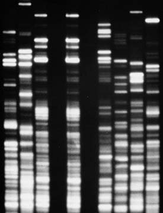
Tecnología ADN y genómica 341
utilizaron secuencias reguladoras de metalotioneína como un interruptor para encender o apagar a voluntad la producción de HC de rata. Después de inyectar el gen modifi cado en las células embrionarias de ratón, implantaron los embriones en el útero de un ratón hembra y lo dejaron desarrollarse. Debido a la difi cultad en la manipulación de los embriones sin dañarlos, el trasplante de genes sólo fue exitoso en un pequeño porcentaje de los animales. Cuando ese ratón transgénico fue expuesto a pequeñas cantidades de zinc, produjo grandes cantidades de hormona del crecimiento porque el hígado es un órgano mucho más grande que la glándula pituitaria. Este ratón creció rápidamente, y el ratón, que se desarrolló de un embrión que había recibido dos copias del gen HC, creció a más del doble que el tamaño normal ( FIGURA 15-14 ). Como se podría esperar, este ratón con frecuencia transmite su incrementada capacidad de crecimiento a sus descendientes.
Los animales transgénicos pueden producir proteínas modifi cadas genéticamente
Ciertas cepas de animales transgénicos producen leche que contiene proteínas ajenas, de importancia terapéutica o comercial. Por ejemplo, los investigadores han introducido en ovejas el gen para activador tisular del plasminógeno (ATP) de la proteína humana. La producción de ganado y aves transgénicos (como cerdos, ovejas, vacas, cabras, aves) que secretan proteínas ajenas con valor medicinal, en su leche o sangre se conoce informalmente como “pharming”, una combinación del inglés “pharmaceuticals” productos farmacéuticos) y “farming” (cría o cultivos en granjas) ( FIGURA 15-15 ). Una fusión de los métodos básicos de la agricultura con los de la biotecnología. En el pharming, los genes recombinantes se fusionan con las secuencias reguladoras de los genes que codifi can las proteínas de la leche, y por lo tanto estos genes se activan sólo en los tejidos mamíferos implicados en la producción de leche. Las ventajas de obtener un medicamento con las proteínas de la leche son que potencialmente se
Los animales transgénicos son valiosos en investigación
Normalmente, los animales transgénicos se producen inyectando el ADN de un gen particular en el núcleo de un óvulo fertilizado o de células ME. Entonces el investigador implanta los óvulos en el útero de una hembra donde continúan su desarrollo. De manera alternativa, el científi co inyecta células ME modifi cadas genéticamente en blastocistos aislados, una etapa inicial en el desarrollo embrionario, y después los implanta en una madre adoptiva. Inyectar ADN en las células no es la única forma de producir animales transgénicos. Los investigadores pueden utilizar virus como vectores de ADN recombinante. Los virus de ARN llamados retrovirus hacen copias de ADN de sí mismos mediante transcripción inversa. Algunas veces las copias de ADN quedan integradas en los cromosomas anfi triones, en donde se replican junto con el ADN anfi trión. Los animales transgénicos aportan valiosas aplicaciones en un amplio rango de áreas de investigación, como la regulación de la expresión génica, función del sistema inmunológico, enfermedades genéticas, enfermedades virales, y genes implicados en el desarrollo de cáncer. El ratón de laboratorio es un organismo modelo particularmente importante para esos estudios. En un estudio clásico sobre el control de la expresión génica, en 1983 el genetista Ralph L. Brinster (Universidad de Pennsylvania) produjo ratones transgénicos que portaban un gen para la hormona del crecimiento de rata (vea la fi gura 17-18). Brinster y sus colaboradores quisieron entender los controles que permiten expresarse a ciertos genes en algunos tejidos pero no en otros. Normalmente, la glándula pituitaria de un ratón produce pequeñas cantidades de HC, y esos investigadores razonaron que los otros tejidos también podrían ser capaces de producir la hormona. Primero aislaron el gen HC de una biblioteca del ADN genómico de la rata. Lo combinaron con la región promotora de un gen de ratón que normalmente produce metalotioneína, una proteína que está activa en el hígado y cuya síntesis es estimulada por la presencia de cantidades tóxicas de metales pesados como el zinc. Los investigadores
FIGURA 15-14 Ratón transgénico El ratón de la derecha es normal, mientras que el ratón de la izquierda es un animal transgénico que expresa la hormona del crecimiento de rata en grandes cantidades.
R. L. Brinster, University of Pennsylvania Medical School
FIGURA 15-15 Vacas transgénicas “pharm” Esas vacas contienen un gen humano que codifi ca la lactoferrina, una proteína que se encuentra en la leche de madres humanas y en secreciones como lágrimas, saliva, bilis, y fl uidos pancreáticos. La lactoferrina es una de las líneas de defensa del sistema inmunitario contra organismos causantes de enfermedades. Las vacas secretan lactoferrina humana en su leche.
Pentti Vänskä, Helsingin Sanomat International Edition
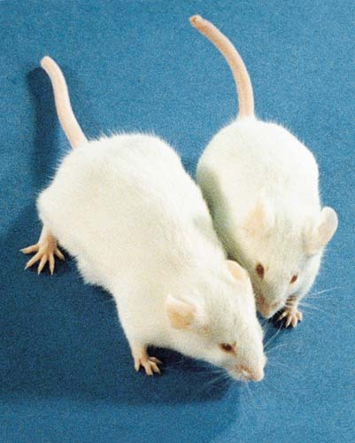
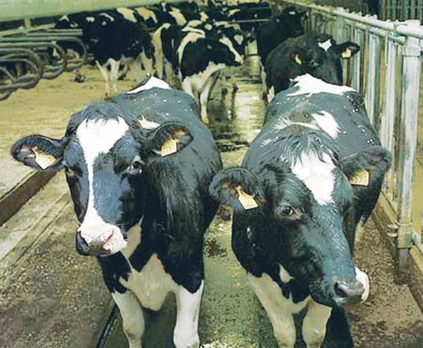
342 Capítulo 15
Estados Unidos es el principal productor mundial de cultivos transgénicos, también conocidos como cultivos modifi cados genéticamente (MG) . En 2007, los agricultores norteamericanos plantaron 57.7 hectáreas (143 millones de acres) de cultivos MG. Globalmente, 51% de cultivos de soya, 31% de maíz, 13% de algodón, y 5% de canola son cultivos MG.
Aplicaciones selectas de plantas transgénicas Los genetistas agrícolas están desarrollando plantas MG que son resistentes a plagas, enfermedades virales y a hongos, calor, frío, herbicidas, terrenos salados o ácidos, y sequías. Por ejemplo, los árboles de papaya modifi cados genéticamente, que son resistentes al virus de la mancha anular, han crecido en Hawai por más de 10 años. Una variedad de maíz que ha sido modifi cada genéticamente para ser resistente a sequías está siendo probada en campos experimentales ( FIGURA 15-16 ).
puede producir en grandes cantidades y se puede obtener simplemente ordeñando al animal. Después esta proteína se puede aislar y purifi car de la leche. La introducción del gen no perjudica a los animales, y como normalmente los descendientes del animal transgénico producen la proteína recombinante, se establecen las cepas transgénicas.
Las plantas transgénicas son cada vez más importantes en agricultura
La gente ha cultivado selectivamente plantas durante miles de años. El éxito de estos esfuerzos depende de los rasgos deseables en la variedad de la planta seleccionada o en plantas silvestres o domesticadas cercanamente relacionadas cuyos rasgos sean transferidos mediante cruces híbridos. Con frecuencia, las variedades locales o especies cercanamente relacionadas de plantas cultivadas tienen rasgos, como resistencia a las enfermedades, que los agricultores podrían introducir en forma ventajosa en variedades más útiles para las necesidades humanas modernas. Si los genes son introducidos en plantas de cepas o especies con las cuales ordinariamente no se cruzan, entonces se incrementan en gran medida las posibilidades de una mejora. El sistema de vectores más ampliamente utilizado para introducir genes recombinantes en muchos tipos de células vegetales es la bacteria Agrobacterium tumefaciens . Normalmente, esta bacteria produce tumores en los vegetales (conocidos como “agallas” o “tumores del cuello”) debido a la introducción de un plásmido, llamado el plásmido Ti , en las células de su anfi trión; Ti se debe a “inductor de tumores”. El plásmido Ti induce el crecimiento anormal forzando a las células vegetales para que produzcan elevados niveles de la hormona del crecimiento vegetal llamada citoquinina (que se analiza en el capítulo 38). Los genetistas “desarman” al plásmido Ti para evitar la formación de tumores y lo emplean como un vector para insertar genes en las células vegetales. Las células en las que se introduce el plásmido alterado son esencialmente normales excepto por los genes insertados. Los genes colocados de esta forma en el genoma vegetal se pueden transmitir sexualmente, mediante semillas, a la siguiente generación, pero también se pueden propagar de manera asexual, por ejemplo, haciendo cortes. Sin embargo, no todas las plantas aceptan con facilidad el ADN, particularmente los granos de cereales que son una gran fuente alimenticia de los humanos. Un ú enfoque ha sido el desarrollo de una “escopeta” genética. Los investigadores recubren los fragmentos de ADN con partículas microscópicas de oro o tungsteno y después los disparan a las células vegetales, penetrando en las paredes celulares. Algunas de las células retienen el ADN, que las transforma. Entonces esas células se pueden cultivar y emplear para regenerar una planta completa (vea la fi gura 17-2). Los genetistas han utilizado exitosamente este enfoque para transferir un gen resistente a una enfermedad bacteriana en el arroz cultivado, a partir de uno de sus parientes silvestres. Una complicación adicional de la modifi cación genética en plantas es que cerca de 120 genes vegetales están en el ADN de los cloroplastos; los otros 3000 genes que las plantas requieren para funcionar están en el núcleo. Los cloroplastos son esenciales en la fotosíntesis, que es la base para la productividad vegetal. Debido a que un gran potencial agrícola depende del mejoramiento en la productividad de la fotosíntesis, entonces es muy deseable el desarrollo de métodos para cambiar la parte del ADN vegetal dentro del cloroplasto. Actualmente, docenas de laboratorios están estudiando métodos de ingeniería de cloroplastos, no obstante que el progreso ha sido lento. En 2001, los fi siólogos de plantas australianos reportaron que habían alterado la rubisco , la enzima para fi jar carbono, clave en la fotosíntesis (vea el capítulo 9), cambiando uno de los genes en el genoma del cloroplasto.
Observe la mala producción en plantas de maíz no modificadas genéticamente empleadas como control.
Plantas de maíz modificadas genéticamente resistentes a sequías son mucho mejores que las plantas no modificadas de maíz.
Cortesía de the Monsanto Corporation
FIGURA 15-16 Animada Campo de prueba de maíz transgénico resistente a sequías
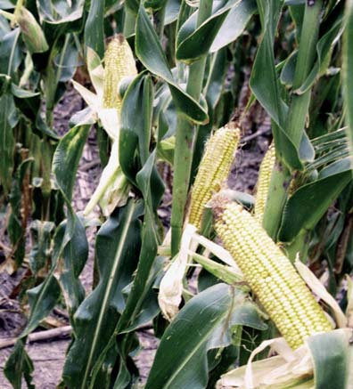
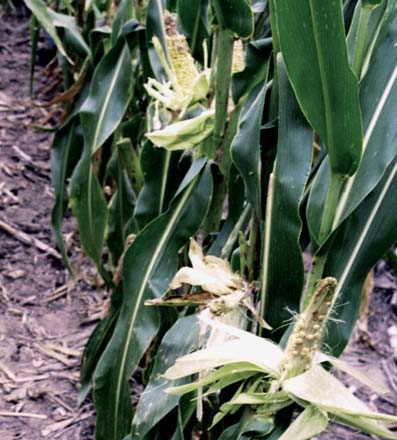
Tecnología ADN y genómica 343
benefi cios. Fue muy preocupante la posibilidad de que un organismo con efectos ambientales indeseables pudiera ser producido accidentalmente. Los investigadores temieron que nuevas cepas de bacterias u otros organismos, con las cuales el mundo no tuviera experiencia, se salieran de control. Los científi cos que desarrollaron los métodos del ADN recombinante insistieron en ser muy estrictos en éstos para que así la nueva tecnología fuera segura. Los experimentos en miles de laboratorios universitarios e industriales, durante más de 35 años, han mostrado que las manipulaciones del ADN recombinante pueden efectuarse con seguridad. Los genetistas han producido cepas de E . coli que no pueden sobrevivir fuera del laboratorio. Los investigadores realizan experimentos que podrían presentar inusuales riesgos en instalaciones diseñadas para mantener organismos patógenos; esta precaución garantiza que los científi cos pueden trabajar con ellos de manera segura. Hasta la fecha, ninguna evidencia sugiere que accidentalmente los investigadores hayan clonado genes peligrosos o hayan liberado al ambiente organismos dañinos. Sin embargo, continúa latente la preocupación de alguna maliciosa manipulación intencional de genes peligrosos. Una vez establecida la seguridad de los experimentos, los científi cos han relajado muchas de las estrictas medidas para emplear ADN recombinante. Sin embargo, aún persisten severas restricciones en ciertas áreas de la investigación del ADN recombinante, ya que en éstas existen conocidos peligros o preguntas aún sin respuesta, acerca de los posibles efectos ambientales. Esas restricciones son más evidentes en la investigación que propone introducir organismos transgénicos en el campo, como cepas agríco las de plantas cuyas semillas o polen podrían difundirse de manera descontrolada. Ahora una gran actividad de investigación se enfoca a determinar los efectos generados por la introducción de organismos transgénicos en un ambiente natural. Pruebas cuidadosamente realizadas han demostrado que los organismos transgénicos no son peligrosos para el ambiente simplemente porque sean transgénicos. Sin embargo, es importante asumir los riesgos de cada nuevo organismo recombinante. Los científi cos determinan si el organismo tiene características que bajo ciertas condiciones pudieran volverlo peligroso para el ambiente. Por ejemplo, si los genetistas han diseñado un cultivo transgénico para resistir a un herbicida, ¿dicho gen podría ser transferido, mediante polen o por alguna otra ruta, a los parientes silvestres del vegetal, generando así “superhierbas” resistentes al herbicida? En 2003, los ecologistas de la Universidad de Tennessee, Knoxville, anunciaron el cruce de plantas oleaginosas transgénicas que contiene el gen Bt con su pariente silvestre, que es una hierba. Cruzaron otra vez los híbridos resultantes con el pariente silvestre y después probaron su habilidad para competir con otras hierbas en un campo de trigo. El vegetal transgénico fue un mal competidor y tuvo menos efecto sobre la producción de trigo que sus parientes silvestres en un campo de control. Esos resultados, aunque alentadores, se deben interpretar con cuidado. Los científi cos deben evaluar individualmente a cada cultivo transgénico para ver si existe un fl ujo de genes a parientes silvestres, y si es así, indagar qué efectos podrían resultar. Otras preocupaciones están relacionadas con las plantas modifi cadas para producir pesticidas, como la toxina Bt . No es seguro el futuro de la toxina Bt en cultivos transgénicos porque los bajos niveles del insecticida potencialmente podrían proporcionar condiciones ideales para selección de individuos resistentes en la población de insectos. Parece que ciertos insectos pueden evolucionar con una resistencia genética a la toxina Bt presente en plantas transgénicas, de la misma manera en que ellas evolucionan con una resistencia genética a los insecticidas químicos. Otra preocupación es que especies, que no son plagas, podrían ser perjudicadas. Por ejemplo, la gente pone mucha atención al hecho de
El maíz también ha sido modifi cado genéticamente para contener el gen Bt , un gen bacteriano que codifi ca una proteína con propiedades insecticidas; Bt se debe al nombre científi co de la bacteria, Bacillus thuringiensis . El maíz Bt , introducido a Estados Unidos en 1996, no necesita rociados periódicos de insecticidas químicos para controlar el parásito conocido como perforador del maíz europeo, la plaga de maíz más dañina en Estados Unidos y Canadá. La tecnología del ADN también tiene el potencial para desarrollar cultivos que sean más nutritivos. Por ejemplo, en la década de 1990 los genetistas modifi caron arroz para producir altas cantidades de b -caroteno, que el cuerpo humano utiliza para elaborar vitamina A. En países en desarrollo, la defi ciencia de vitamina A es causa de ceguera irreversible en los niños. La defi ciencia de vitamina A también hace a los niños más susceptibles al sarampión y a otras enfermedades infecciosas. Como el arroz es la dieta básica en muchos países con defi ciencia de vitamina A, un más amplio uso de arroz MG con b -caroteno podría ayudar a prevenir la ceguera en muchos niños del mundo. Sin embargo, el arroz MG aún no está aprobado para consumo humano. Como algunos animales transgénicos, potencialmente ciertas plantas transgénicas pueden ser “pharmed” para producir grandes cantidades de proteínas importantes médicamente. Se incluyen ejemplos como los anticuerpos contra el virus herpes y una vacuna específi ca para el paciente del linfoma, un tipo de cáncer. Algunas personas están preocupadas sobre los efectos a la salud por consumir alimentos derivados de cultivos MG y piensan que estos alimentos deberían ser restringidos. Por ejemplo, la crítica dice que algunos consumidores pueden presentar alergias a los alimentos. Los científi cos también reconocen esta preocupación y rutinariamente controlan nuevos cultivos MG para alergicidad. Además, existe una controversia en curso si los alimentos MG deberían llevar una etiqueta distintiva. La FDA y la mayoría de los científi cos piensan que esta marcación sería contraproducente porque incrementaría la ansiedad del público sobre una tecnología que es tan segura como los tradicionales métodos de cría. En 1996, la Corte de Apelaciones de Estados Unidos sostuvo la posición de la FDA de la no necesidad de marcar los productos transgénicos.
Repaso
■ ¿Cuáles son las ventajas médicas signifi cativas, para los diabéticos, de la producción de insulina humana mediante métodos de ADN recombinante?
■ ¿Qué son las repeticiones cortas en tándem (RCT), y por qué son tan útiles en la impronta de ADN?
■ ¿Por qué la inactivación del gen y la mutagénesis controlada en ratones tienen potenciales benefi cios para humanos?
15.5 LA TECNOLOGÍA DEL ADN HA ORIGINADO PREOCUPACIONES POR LA SEGURIDAD
OBJETIVO DE APRENDIZAJE
11 Describir al menos dos asuntos de seguridad asociados con la tecnología del ADN recombinante y explicar cómo esos asuntos están siendo considerados.
Cuando la tecnología del ADN recombinante fue introducida a principios de la década de 1970, muchos científi cos consideraron que se podría emplear para fi nes incorrectos tan signifi cativos como los posibles
344 Capítulo 15
cuestión, los investigadores sólo están desarrollando salmón transgénico de hembra no reproductora. Para resumir, la tecnología del ADN en la agricultura ofrece muchos benefi cios potenciales, incluyendo altas producciones al resistir enfermedades, alimentos más nutritivos, y uso reducido de pesticidas químicos. Sin embargo, al igual que otros tipos de tecnología, la modifi cación molecular tiene algunos riesgos, como el riego de que plantas y animales modifi cados genéticamente pudieran transferir sus genes ajenos a parientes naturales, causando problemas ambientales desconocidos. La ciencia de evaluación de riesgos , que utiliza métodos estadísticos para cuantifi car los riesgos tal que puedan ser comparados y confrontados, ayudará a que la sociedad decida si ignora, reduce, o elimina los riesgos específi cos de organismos modifi cados molecularmente.
Repaso
■ ¿Cuáles son algunas de las preocupaciones ambientales respecto a organismos transgénicos? ¿Qué tipos de información necesita la sociedad para determinar si son válidas dichas preocupaciones?
que las larvas de la mariposa monarca criadas en el laboratorio se dañan si son alimentadas con polen de plantas de maíz Bt . Sin embargo, estudios más recientes sugieren que las larvas de la monarca viviendo en un ambiente natural no consumen sufi ciente polen para causar daño. Además, la evidencia indica que el daño a especies que no son plagas por la dispersión de pesticidas es mucho mayor que cualquier daño debido a cultivos transgénicos. También existen las preocupaciones ambientales hacia los animales transgénicos. Varios países están en el proceso de desarrollar peces transgénicos de rápido crecimiento, normalmente mediante la inserción de un gen codifi cante para una hormona del crecimiento. El salmón transgénico del Atlántico, por ejemplo, crece seis veces más rápido que el salmón no transgénico para consumo humano. El pez transgénico no creció más grande que el otro pez, pero sí lo hizo más rápido. Los benefi cios de tal pez mejorado genéticamente incluyen una reducida presión sobre las pesquerías naturales y menos contaminación de las granjas piscícolas. Sin embargo, si un pez transgénico escapa de una granja piscícola, ¿qué efectos se podrían tener sobre los parientes naturales? Para estudiar esta
15.1 (página 324)
1 Explicar cómo funciona una enzima de restricción típica para cortar las moléculas de ADN y dar ejemplos de las aplicaciones de estas enzimas en la tecnología del ADN recombinante.
■ La tecnología del ADN recombinante aísla y amplifica secuencias de ADN específi cas, incorporándolas en un vector de moléculas de ADN. Entonces los investigadores clonan —propagan y amplifi can—, el ADN recombinante resultante en organismos como la E . coli .
■ Los investigadores utilizan enzimas de restricción para cortar ADN en fragmentos específi cos. Cada tipo de enzima de restricción reconoce y corta una secuencia de bases del ADN altamente específi ca. Muchas enzimas de restricción realizan un corte escalonado en las secuencias de ADN para producir una cadena simple complementaria de extremos pegajosos.
Aprenda más acerca de enzimas de restricción, haciendo clic sobre la fi gura en CengageNOW.
■ Con frecuencia los genetistas construyen moléculas de ADN recombinantes permitiendo que los extremos de un fragmento de ADN y los de un vector (ambos cortados con la misma enzima de restricción), se asocien mediante un emparejamiento de bases complementarias. Entonces la ADN ligasa une las cadenas de ADN covalentemente para formar una molécula de ADN recombinante estable.
Aprenda más acerca de la formación del ADN recombinante, haciendo clic sobre la fi gura en CengageNOW.
2 Distinguir entre una biblioteca de ADN genómico, una biblioteca cromosómica, y una biblioteca de ADN complementario (ADNc); explicar por qué se podría clonar el mismo gen eucariota de ambas bibliotecas, de ADN genómico y de ADNc.
■ Una biblioteca de ADN genómico contiene miles de fragmentos de ADN que representan el ADN total de un organismo. Una biblioteca cromosómica contiene todos los fragmentos de ADN de un cromosoma específi co. Cada fragmento de ADN de una biblioteca de ADN genómico o de una biblioteca cromosómica se almacena en una específi ca cepa bacteriana.
■ Una biblioteca de ADNc se produce empleando transcriptasa inversa para elaborar copias de ARNm maduro aislado de células eucariotas. Estas copias, conocidas como ADN complementario (ADNc) , entonces son incorporadas en vectores de ADN recombinante.
Conozca más acerca de la formación del ADNc, haciendo clic sobre la fi gura en CengageNOW
■ Los genes presentes en las bibliotecas de ADN genómico o cromosómicas de eucariotas contienen intrones , regiones no codifi cantes de proteína.
Esos genes se pueden amplifi car en bacterias, pero la proteína no es apropiadamente expresada. Ya que los intrones han sido eliminados de las moléculas de ARNm maduro, entonces los genes eucariotas en bibliotecas de ADNc se pueden expresar en bacterias para elaborar productos proteínicos funcionales. 3 Explicar cómo se utiliza una sonda o fragmento de ADN.
■ Los investigadores emplean una secuencia de ADN radiactivo como una sonda de ADN para supervisar a miles de moléculas de ADN recombinante en células bacterianas y así encontrar la colonia que contiene el ADN de interés.
Observe el proceso de empleo de una sonda de ADN para localizar células bacterianas con una específi ca molécula de ADN recombinante, haciendo clic sobre la fi gura en CengageNOW.
4 Describir cómo se utiliza la reacción en cadena de la polimerasa para amplificar el ADN in vitro.
■ La reacción en cadena de la polimerasa (RCP) es ampliamente utilizada, automatizada, en la técnica in vitro en la cual los investigadores emplean cebadores específi cos para inactivar una secuencia de ADN particular y después clonarla utilizando una polimerasa de ADN resistente al calor.
■ Mediante la RCP, los científi cos amplifi can y analizan minúsculas muestras de ADN tomadas de varios sitios, desde escenas del crimen hasta restos arqueológicos.
Observe la amplifi cación de ADN mediante RCP, haciendo clic sobre la fi gura en CengageNOW.
■ ■ RESUMEN: ENFOQUE EN LOS OBJETIVOS DE APRENDIZAJE
Tecnología ADN y genómica 345
enfermedades o a las proteínas que ellos codifi can, las cuales entonces pueden ser desactivadas mediante medicamentos terapéuticos. 9 Defi nir farmacogenética y proteómica .
■ La farmacogenética , la nueva ciencia de la medicina basada en los genes individuales, toma en cuenta las sutiles diferencias genéticas entre individuos y personaliza medicamentos a la medida de la estructura genética del paciente.
■ La proteómica es el estudio de todas las proteínas codifi cadas para el genoma humano y las producidas en las células y tejidos de la persona. Los científi cos quieren identifi car todas las proteínas elaboradas por un tipo de célula dado, pero el proceso es mucho más complicado que secuenciar el genoma humano.
15.4 ( página 339 )
10 Describir al menos una aplicación importante de la tecnología del ADN recombinante en cada uno de los siguientes campos: medicina, impronta de ADN, y organismos transgénicos.
■ Las bacterias modifi cadas genéticamente producen importantes productos proteínicos humanos, incluyendo insulina, hormona del crecimiento, activador tisular del plasminógeno (ATP), factor de crecimiento tisular beta (FCTb ), factor de coagulación VIII, y dornasa alfa (DNasa).
■ La impronta de ADN es el registro del ADN de un individuo. Se basa en una variedad de repeticiones cortas en tándem (RCT) , marcadores moleculares que son altamente polimórfi cos dentro de la población humana. La impronta de ADN tiene aplicaciones en áreas como la legislación, asuntos de disputas de parentesco, y rastreo de alimentos contaminados.
Resuelva un caso de asesinato utilizando el registro de ADN, haciendo clic sobre la fi gura en CengageNOW.
■ Los organismos transgénicos tienen ADN ajeno incorporado en su material genético. El ganado transgénico produce proteínas ajenas en su leche. Las plantas transgénicas tienen gran potencial en agricultura.
15.5 ( página 343 )
11 Describir al menos dos asuntos de seguridad asociados con la tecnología del ADN recombinante y explicar cómo esos asuntos están siendo considerados.
■ Algunas personas están preocupadas por la seguridad respecto a organismos modifi cados molecularmente. Para atender a estas preocupaciones, los científi cos efectúan la tecnología del ADN recombinante bajo medidas específi cas de seguridad.
■ La introducción de plantas y animales transgénicos en el ambiente natural, donde se propagan de manera descontrolada, es una preocupación vigente.
15.2 (página 331)
5 Distinguir entre las técnicas de transferencia de ADN, ARN y las de transferencia de proteínas.
■ La técnica de transferencia Southern identifi ca fragmentos de ADN clasifi cándolos mediante electroforesis en gel y después transfi riéndolos a una membrana de nitrocelulosa o nylon. Entonces una sonda es hibridada por emparejamiento de bases complementarias para unir el ADN a la membrana, y la banda o bandas de ADN son identifi cadas empleando autorradiografía o luminiscencia química.
■ Cuando las moléculas de ARN que son separadas por electroforesis se transfi eren a una membrana, el resultado es una transferencia Northern .
■ Una transferencia Western consiste en proteínas o polipéptidos previamente separados mediante electroforesis en gel. 6 Describir el método de terminación de la cadena para secuenciación de ADN.
■ La secuenciación de ADN aporta información sobre la estructura de un gen y la probable secuencia de aminoácidos de sus proteínas codifi cadas.
■ La secuenciación de ADN automatizada está basada en el método de terminación de la cadena , que utiliza didesoxinucleótidos, cada uno etiquetado con un distinto colorante fl uorescente, para terminar la elongación durante la replicación de ADN. La electroforesis en gel separa los fragmentos resultantes, y un láser identifi ca la secuencia nucleótida.
Aprenda más acerca de la secuenciación automatizada de ADN, haciendo clic sobre la fi gura en CengageNOW.
15.3 ( página 335 )
7 Describir tres importantes áreas de investigación en genómica.
■ Genómica es el campo emergente de la biología que estudia la secuencia de ADN completa del genoma de un organismo. La genómica estructural se refi ere al mapeo y secuenciación del genoma. La genómica funcional estudia las funciones de genes y secuencias no génicas en genomas. La genómica comparativa implica la comparación de genomas de diferentes especies para un mayor entendimiento de sus relaciones evolutivas. 8 Explicar cómo funciona un microarreglo de ADN y dar un ejemplo de su investigación y potencial médico.
■ Muchas pruebas diagnósticas implican microarreglos de ADN , en los cuales cientos de distintas moléculas de ADN son colocadas en un portaobjetos o en un chip. Los microarreglos de ADN permiten que los investigadores comparen las actividades de miles de genes en células normales y enfermas provenientes de muestras de tejidos. Como el cáncer y otras enfermedades exhiben patrones alterados de expresión génica, los microarreglos de ADN tienen el potencial de identifi car a los genes causantes de
Un plásmido (a) puede ser utilizado como un vector de ADN (b) es un tipo de bacteriófago (c) es un tipo de ADNc (d) es un retrovirus (e) b y c
Las moléculas de ADN complementario con extremos pegajosos se asocian por (a) enlaces covalentes (b) enlaces de hidrógeno (c) enlaces iónicos (d) enlaces de disulfuro (e) acoplamientos de fosfodiéster
El ADN humano y un plásmido particular tienen sitios que son cortados por las enzimas de restricción Hin dIII y Eco RI. Para elaborar el ADN recombinante, los científi cos deberían (a) cortar el plásmido con Eco RI y el ADN humano con Hin dIII (b) emplear Eco RI para cortar el plásmido y el ADN humano (c) utilizar Hin dIII para cortar el plásmido y el ADN humano (d) a o b (e) b o c
¿Qué técnica replica rápidamente fragmentos de ADN específi cos sin clonación en las células? (a) electroforesis en gel (b) bibliotecas de ADNc (c) sonda de ADN (d) polimorfi smo de longitud de fragmentos de restricción (e) reacción en cadena de la polimerasa, RCP
La técnica RCP utiliza (a) ADN polimerasa resistente al calor (b) transcriptasa inversa (c) ADN ligasa (d) enzimas de restricción (e) b y c
Un clon de ADNc contiene (a) intrones (b) exones (c) anticodones (d) a y b (e) b y c
Los didesoxinucleótidos ddATP, ddTT P, ddGTP y ddCTP son importantes en la secuenciación de ADN porque ellos (a) causan la prematura terminación de una cadena de ADN creciente (b) son empleados como cebadores (c) hacen que los fragmentos de ADN que los contienen migren más lentamente a través de un gel de secuenciación (d) no son afectados por elevadas temperaturas (e) tienen más energía que los desoxinucleótidos
En la técnica de la mancha Southern, ______ es/son transferidos de un gel a una membrana de nitrocelulosa o nylon. (a) proteína (b) ARN (c) ADN (d) colonias bacterianas (e) transcriptasa inversa
EVALÚE SU COMPRENSIÓN
346 Capítulo 15
El factor beta de crecimiento tisular (a) es una sonda de ADN para plásmidos recombinantes (b) es un producto de la tecnología del ADN empleada en ingeniería tisular (c) es necesaria para elaborar una biblioteca de ADNc (d) no puede ser sintetizada sin un ADN polimerasa resistente al calor (e) es aislada por la técnica de transferencia Southern
Esos marcadores moleculares altamente polimórfi cos son útiles en el registro de ADN: (a) vectores de clonación cósmidos (b) secuencias de ADN clonadas (c) secuencias de ADN palindrómicas (d) repeticiones cortas en tándem (e) ADN complementarios
La electroforesis en gel separa ácidos nucleicos con base en las diferencias en (a) longitud (peso molecular) (b) carga (c) secuencia nucleótida (d) proporciones relativas de adenina y guanina (e) proporciones relativas de timina y citosina
Una biblioteca de ADN genómico (a) representa a todos los ADN en un cromosoma específi co (b) se construye empleando transcriptasa inversa (c) se almacena en una colección de bacterias recombinantes (d) es una copia ADN de ARNm maduros (e) permite a los investigadores amplifi car una minúscula muestra de ADN
¿Cuáles son algunos de los problemas que podrían surgir si se intentara producir una proteína eucariota en una bacteria? ¿Cómo podrían emplearse plantas o animales transgénicos para ayudar a resolver algunos de esos problemas?
¿Sería posible la modifi cación molecular sin conocer la genética de bacterias? Explique.
¿Cómo se relaciona la proteómica con la genómica funcional?
ANÁLISIS DE DATOS. El análisis PLFR se efectuó en sangre de una escena del crimen y en la de dos sospechosos. El ADN de la escena del crimen está marcado como E(vs). ¿Cuál sospechoso es probablemente culpable? ¿Cuál sospechoso es defi nitivamente inocente?
Leonard Lessin/Peter Arnold, Inc.
VÍNCULO CON LA EVOLUCIÓN. La tecnología del ADN, como la producción de animales transgénicos, es posible gracias a que una amplia variedad de organismos diferentes tienen esencialmente sistemas genéticos idénticos (ADN ¡ ARN ¡ proteína). ¿Cuál es el signifi cado evolutivo de la universalidad de los sistemas genéticos en organismos tan diversos como bacterias y cerdos?
CIENCIA, TECNOLOGÍA Y SOCIEDAD. ¿Cuáles son algunas de las formas en que podrían afectarle personalmente las recientes tecnologías del ADN?
Pre guntas adicionales están disponibles en CengageNOW en www.cengage.com/login.
PENSAMIENTO CRÍTICO
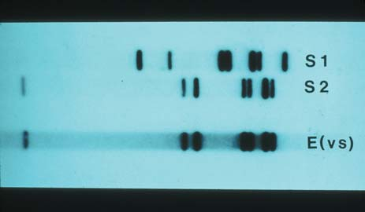